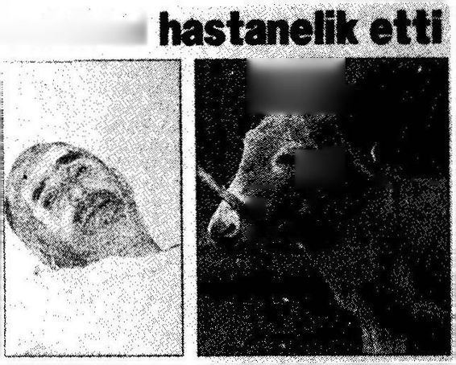
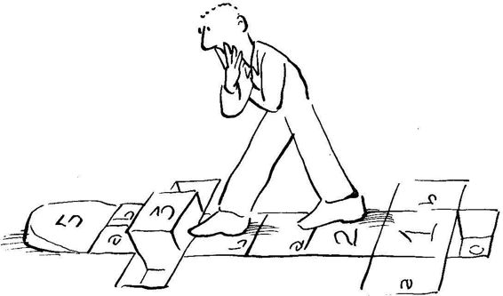

Tepkici tutum içinde olan kişinin etki çemberi yaşamı boyunca daha da küçülmeye devam eder.
"Kendi etki sınırlarım dikkate almayan kişi, etki alanının sorumluluğunu üstlenmek yerine, bu alanın dışındaki ilgilere yönelir. Ben temel ilkelerle ilgili konuşurken siz, bu ilkeleri kendi yaşamınıza nasıl uygulayacağınızla ilgileneceğiniz yerde, toplumun tümüne ya da uluslararası ilişkilere nasıl uygulanabileceği ile ilgileniyordunuz. Sanki Psikoloji Bölümü'nde okuyan Timur ile değil de, Türkiye Cumhuriyet Hükümeti'nin Başbakanı ve de Türk Devletinin Cumhurreisi Timur Bey'le konuşuyordum. Zaman ve enerjisini, ilgilendiği fakat etki alanında olmayan olaylara harcayan tutum kişiyi daha da etkisiz hale getirir. Etkileme gücü azalan kişi, sorumluluk alma duygusundan daha da uzaklaşır.
"Bazı durumlarda kişinin etki çemberi mevkii, serveti, rolü, ilişkilerinden dolayı, ilgi çemberinden daha büyük olabilir. Öyle bir ülke düşünün ki, yüksek düzeydeki sorumlu yöneticileri, etki alanları içinde olduğu halde, o ülkede yılda 10 binin üstünde can alan trafik kazalarına ilgi duymuyor olsunlar. Etki çemberinin, ilgi çemberinden daha büyük olduğu bu durumlarda, kişinin düşünsel ve duygusal miyopluğu söz konusudur. Böylesine duygusal miyopluk, hem o kişinin hem de toplumun psikolojik yönden pek sağlıklı olmadığınaişaret eder.
Etki çemberinin, ilgi çemberinden daha büyük olduğu durumlarda, kişinin düşüncel ve duygusal miyopluğu söz konusudur.
"Girişimci tutumu benimsemiş, «gelişmiş» insan kudretlenip mevki sahibi olduğu zaman ilgi ve etki çemberleri hemen hemen birbirine denkleşir; böylesine sağlıklı sorumluluk duygusu taşıyan insanın etki ve ilgi çemberleri birbirine çok benzer."
Yakup Bey'in söylediklerini kolayca izleyebiliyordum. Söylediklerinin hepsi yalın, herkesin anlayabileceği türden gerçeklerdi; bu yalın gerçekler gözümde anlam kazanıyorlardı. ilgiyle Yakup Bey'i dinlemeye devam ediyordum. Yakup Bey konuşmasına devam etti:
Olayları Denetim Derecemiz
"Karşılaştığımız sorunları üç başlık altında toplayabiliriz:
"1. Doğrudan denetimimiz altında olan sorunlar: Bu sorunların temelindeki duygu, düşünce ve davranışlar doğrudan bizim denetimimiz altındadır.
"2. Dolaylı olarak denetimimiz altında olan sorunlar: Bu sorunların temelindeki duygu, düşünce ve davranışlar doğrudan bizim denetimimiz altında değildir; ne varki, bizim ilişkide olduğumuz, kendilerini etkileyebileceğimiz insanlar bu olaylara yön verebilirler; olaylar onların denetimi altındadır.
"3. Denetimimiz dışında olan sorunlar: Bu sorunların temelindeki duygu, düşünce ve davranışlar ne doğrudan bizim denetimimiz altındadır, ne de bizim ilişkide olduğumuz, kendilerini etkileyebileceğimiz insanların. Örneğin, geçmişte olan bitenleri değiştirme gücümüz yoktur. '
"«Gelişmiş» insan paradigmasıyla yaşayan girişimci kişi bu sorunlara şöyle yaklaşır:
"1. Doğrudan denetimi altında olan sorunların çözümünde, o sorunların temelinde yatan duygu, düşünce ve davranışları değiştirme sorumluluğunu üzerine alır; kimseyi suçlamadan ya da değiştirmeye kalkmadan, kendi davranışlarını değiştirmeye yönelir.
"2. Dolaylı denetimi altında olan sorunlarla ilgilenirken, «Diğerleriyle nasıl etkileşim kurabilirim, en etkili iletişimi nasıl gerçekleş tirebilirim?» sorunu üzerinde durur. Enerjisini başkalarını suçlamaya değil, «İlişkilerimizi nasıl iyileştirebilirim?»e yöneltir. Bu yaklaşımı benimsemiş birey, «Başkalarıyla etkili iletişim nasıl kurarım, ilişkimi olumlu yönde nasıl geliştirebilirim?» konusuyla ilgilenerek, kendi iletişim becerilerini geliştirmeye çabalar.
"3. Hiç denetimi altında olmayan olayları değiştiremez ama, sorunları nasıl algılayıp kabulleneceği ve onlara nasıl tepkide bulunacağı bireyin denetimi altındadır. İnsanın sevmediği sorunlarla yaşamasını öğrenmesi gerekebilir. Aksi haldegeçmişteolanve denetimimiz dışında bulunan sorunlar güçlenerek bizi denetlemeye başlar.
Amerikalı bir meslektaşımınofisinde çerçeve içinde asılı gördüğüm aşağıdaki ifade, bu tutumu iyi belirtiyor: "Tanrım, değiştirilebilen ve değişmesi gereken şeyleri değiştirme cesaret ve gücünü; değiştirilemeyecek şeyleri olduğu gibi kabul etme olgunluğunu ve ikisi arasındaki farkı anlayabilecek bilgeliği bana ver."(22>
Yakup Bey burada biraz durdu, yüzüme baktı ve önemli bir sır ifşa edercesine "İster doğrudan, ister dolaylı yoldan denetimimiz altında olan, ya da tümüyle denetimimizin dışında bulunan hangi tür problemle karşılaşırsak karşılaşalım, atılacak ilk adım bizim etki çemberimiz içinde yer alır" dedi. 22
(22) "Lord, give me tlıe courage to clıange tlıe tlıings whiclı can and ouglıt to be changed, tlıe serenity to accept the things which cannot be changed, and the wisdom to know the difference."
"Girişimci tutumu benimsemiş kişinin davranışı saldırganlıkla, atılganlıkla, dobra dobra konuşmakla karıştırılmamalıdır. Girişimci kişi gerçekçidir, kendi temel ilkelerini, ilkeler üzerine kurduğu değerleri bilir ve davranışında canlı tutar; doğru değerleri yaşamına alır, işe yaramayanları atar. Neye gereksinimi olduğunu bilir ve o gereksinimi kendi değerleri çerçevesinde karşılamaya girişir."
Yakup Bey ayağa kalktı, şöyle biraz gerindi. "Gel bir ıhlamur daha içelim" dedi. Birlikte çayevine doğru yöneldik. Eski masamız boştu, aynı yere oturduk. Güneş eskisi gibi sırtımıza vurmuyordu. Hava hafiften serinlemeye başlamıştı. Ihlamurun sıcaklığı serinlikte daha hoş geliyordu. Yakup Bey konuşmaya devam etti:
Davranış ve Sonuçları
"Davranışlarımızı seçmekte özguruz, ne var ki, davranışların sonuçlarını seçmekte özgür değiliz. Her davranışın doğası icabı, kendine özgü sonuçları olur. Kendimizi trenin önüne atabiliriz, ama trenin bizi ne derece yaralayacağı ya da ezeceğini denetleyemeyiz. Sahtekarlık yapıp yapmama konusunda seçme özgürlüğümüz vardır, ama sahtekarlık yaptıktan sonra, karakterimizde ve ilişkimizde yapacağı tahribatı önleyemeyiz. Sahtekarlık davranışı, uzun sürede, insan doğasının zorunlu sonucu olarak olumsuzluk ortaya çıkarır.
"Davranışlarımız temel bazı evrensel ilkelerle yönetilmektedir. Bu ilkelerle ahenk içinde yaşamak olumlu, onlara ters düşen davranışlarda bulunmak olumsuz sonuçlar doğuracaktır; bunu değiştiremeyiz. Davranışı seçtiğimiz zaman, bu davranışın sonuçlarından sorumlu olmayı da seçmiş oluruz.
"Evvelden yapmış olduğumuz hatalar bizim ilgi çemberimize girer. Hatalarımızı geri çağırıp, onları değiştirme olanağımız yoktur. Hatanın hemen farkına varıp, nereden ve nasıl geldiğini iyice öğrenmek, bilmek istemek çok önemlidir. Bu tür gözlemlere temel olan hatalar, başarının temellerinioluşturur. IBM'in kurucusu T. J. Watson, «Başarı, hata ve başarısızlığın biraz ilerisinde duran şeydir,» demiştir.
"Hatasını insan saklayınca ne olur? Hata daha da önem kazanır ve kuvvetlenir. Hatayı saklamaya neden olan genellikle korkudur. Bu korkunun kaynağı daha da kuvvetlenir ve kişi gücünü kendini geliştirmeye değil, korktuğu şeyden korunmaya verir.
"Kendini güçlendirmek isteyen kişi, hatasını görünce hemen kabul eder ve gerekeni yapar."
Yakup Bey burada gülerek, "Tabii bunu söylemesi kolay, yapması zordur" dedi. "Bir insanın hatasını görebilmesi, gördükten sonra kabul ederek onu değiştirmeye çalışması, öyle sık sık görülen olaylardan değildir. Bu aşamaya gelebilmesi için kişinin önemli bir gelişim sürecinden geçmesi ve belirli bir olgunluk aşamasına ulaşması gerekir" diye sözüne devam etti:
Girişimci Tutum ve Kendini Adama
"Kendini adama ve söz vermeler kişinin etki çemberinin iki önemli öğesidir. Bireyin kendi kendine ya da başkalarına verdiği sözlerin niteliği ve niceliği, onun girişimci tutumu ne kadar benimseyip benimsemediğinin belirtileridir.
"Kendini adama ve söz verme, bireyin gelişme ve büyümesinin temel araçlarıdır. Kendinin bilincinde olan kişi, vicdan yeteneklerini kullanarak kendi zayıf taraflarını, gelişmesi gereken yönlerini, ya da yaşamından atılması gereken tutum ve davranışlarını belirler.
"Hayal gücünü ve özgür iradesini kullanıp bilinci ve vicdanıyla etkileşim kurarak, and içmeler ve söz vermeler yapar. Bu and içmeler ve söz vermeler kuvvetli karakter inşa etmenin, «kalıplanmış» insan paradigmasından kurtulup «gelişmiş» insan paradigmasına geçmenin ilk adımlarıdır.
"İki şekilde yaşamımızı denetlemeye başlayabiliriz:
1) Söz veririz ve verdiğimiz sözü tutarız;
2) Bir hedef seçeriz ve hedefe ulaşmak için uğraşmaya başlarız."
Söylediği sözlerin önemine inanan insanın tavrıyla bir ara durdu veb eni süzdü. Dikkatle dinlediğimi, bıkmadığımı görerek, aynı şevkle konuşmasına devam etti:
"Bu ikisini ufak çaplarda dahi yapmaya başlarsak gittikçe kendimizle bütünleşmeye, gücümüzün farkına vararak kudret kazanmaya başlarız. Kendimizle bütünleşip, gücümüzün daha farkına vardıkça duygu, düşünüş ve davranışlarımızı sahiplenmeye ve yaşamımızdan daha çok sorumluluk almaya başlarız.
"Etkili insan olmaya doğru giden yolun ilk adımı kendi kendine söz verme ve verdiği sözü tutmadır. Bilgi, beceri ve arzu bizim denetimimiz altındadır. Bilgi, beceri ve arzuyu bir araya getirdik mi, söz verdiğimiz işleri mutlaka başarırız."
Yakup Bey'in «Söz verdiğimiz işleri mutlaka başarırız» ifadesi, üretkenliğe dönük bir ifade olarak göründü bana. Aramızda şöyle bir konuşma geçti:
Timur: "Yakup Bey, «Bilgi, beceri ve arzuyu bir araya getirdik mi, söz verdiğimiz işleri mutlaka başarırız,» ifadenizde, «başarma» kelimesini üretkenliğe dönük bir ifade olarak görüyorum. Kişinin mutlaka başarması çok mu önemli."
Yakup Bey: ”Peki siz nasıl söylememi isterdiniz?"
Timur: "Bilmiyorum; ne var ki, içtenlikle ve gerçekten uğraşarak denemenin önemli olduğunun vurgulanmasını, «etkinlik» anlayışına daha yatkın buluyorum."
Yakup Bey: "Aslında size hak vermemek elde değil. Bu tür eksikliklerimi, ya da yanlış anlamaya yol açacak ifade kopukluklarını ortaya çıkardığınız için size teşekkür ederim."
Yakup Bey'in yüzünden bu sözleri içtenlikle söylediğini anlıyordum. Mutlu oldum.
Bir süre sustuktan sonra Yakup Bey konunun sonuna gelmiş bir tavırla ıhlamurdan bir yudum daha aldı. "Vapur'un gelmesine on dakika var, haydi iskeleye doğru yürüyelim" dedi ve ayağa kalktık. Ihlamurların parasını o ödedi.
Vapur boyunca değişik konulardan konuştuk. Eminönü'nde ayrılırken, "Önümüzdeki buluşmada lider ile yönetici arasındaki farkları ve farkların kaynağı olan paradigmaları inceleyeceğiz" diye bana ön bilgi verdi.
Her davranışın atası bir düşüncedir.
EMERSON
LİDERLİK VE YÖNETİM
Notlarımı çekerken daha önceki buluşmamızda söz edilen vicdan ve irade arasındaki ilişki üzerinde durduğumu gözledim. Kişinin sadece vicdanlı olması yeterli değildi, vicdanının emrettiği şeyleri yapabilecek irade kuvvetinin olması da gerekiyordu. Daha önceki konuşmaların birinde farkına vardığım ve sonra notları temize çekerken daha açık seçik görebildiğim diğer bir husus da, iç özgürlüğü ile mutluiuk arasındaki ilişkiydi. Sanki bir paranın iki yüzü gibi iç özgürlük ve mutluluğun birbirlerine bağlı olduğunu görüyordum.
Notları temize çekerken Yakup Bey'le buluşmalarımızın önemini daha kavrıyor ve büyüyen bir istekle önümüzdeki buluşmaya gidiyordum.
Salı öğleden sonra heve’sle Sahaflar'a gittim. Elif Kitabevi'nden yürüyerek Beyazıt Camii'nin önündeki çayevine geldik. Her zamanki masamıza oturduk. lhlamurlarımızı ısmarladıktan sonra Yakup Bey bana "Hiç ölümü düşündün mü?” diye sordu.
Beklemediğim bir soruydu. Merakla yüzüne baktım. Ciddiydi. Sorusunu yanıtlamamı bekliyordu.
"Annem ben 10 yaşındayken öldü. Onun ölümünde ilk üç beş gün ölüm nedir pek farkına varmadım; fakat bir hafta geçtikten sonra annemi artık hiç göremeyeceğimi anladım; bu bende büyük bir boşluk, bir yıkıntı yarattı. Ölüm kelimesi soyut bir kelime olmaktan çıktı, hayatımdaki en önemli insanlardan birini bir daha hiçgörmemecesinekaybetme anlamına geldi."
Yakup Bey, "Ben de annemi 10 yaşında kaybettim" dedi. Bir süre sessiz kaldık. Ihlamurlarımızı birkaç kez yudumladıktan sonra, Yakup Bey konuşmaya başladı.
Ölüm En Güçlü Öğretmen
"Carlos Castaneda'nın Kızılderili piri Don Juan Matus, «Unutma, ölüm en güçlü öğretmendir,»" der.
Yakup Bey sözüne devam etmek üzereyken onun sözünü kestim ve "Carlos Castaneda kim?" diye sordum.
"Carlos Castaneda Kızılderili biri üzerine uzun süre araştırma yapmış araştırıcının adıdır. Kendisi, Los Angeles şehrindeki Kaliforniya Üniversitesi'nde (UCLA) Antropoloji Bölümü'nde, bitkiler kullanarak Kızılderililerin hastalıkları nasıl iyileştirdiği üzerine bir doktora tezi hazırlamıştır. Arizona'da bir otobüs yolcu terminalinde Don Juan Matus adında yaşlı bir Kızılderili ile tanışır. Bu tanışmanın sonucu Carlos Castaneda uzun yıllar Don Juan Matus'la beraber olur ve ondan öğrendiklerini 8 kitap halinde yayınlar/23*
"Carlos Castaneda'nın kitapları benim üzerimde etkili oldu. Bu kitapları ara sıra hâlâ okurum. Don Juan kitap yoluyla tandığım en bilge kişilerden biridir. Ölümle ilgili olarak Carlos'a, «Ne zaman yaşamını anlamsız, yüzeysel ve sıkıcı bulmaya başlarsan, şu dünya üzerinde kaç günün olduğunu düşün ve bu bilinçle davranışlarını gözden geçirerek yönlendir,» diye öğüt verir.
"Sadece Kızılderili Don Juan değil, batılı bir düşünür olan Joseph Addison da, ölümünü düşününce insanın gerçekleri daha kolay anlayacağını söyler. Kendini ve sorunlarını çok önemseyen kişilerin ara sıra mezarlığa gidip, mezar taşlarının üstündeki isim ve tarihleri okumalarını salık verir.
"Birçok düşünür, insanın ölümünü düşününce, kendi yaşamının gerçek anlamını araştırmaya başladığını söylemiştir. Önünde sonsuz zaman olmadığını, her gününü kendi amaçları çerçevesinde geçirmesi gerektiğini anlayan kişi, temel değerleriyle ilişki haline girer ve onların farkına varır. Temel değerler kişinin dününü, bugününü ve yarınını birleştiren bir köprü, bir bağ görevini yapar. Bu nedenle, temel değerleriyle ahenk içinde yaşayan kişinin yaşamı tümleşir ve anlam kazanır."
(23) Bu kitabın ilk baskısından sonra Carlos Castenada'nın The Art of Dreaming adlı kitabı yayınlandı. New York: Harper-Collins, 1993.
Yakup Bey konuşmasına devam etmek üzere idi. Ama ölüm kavramının benim yaşamımla ilişkisini görememiştim. Kendisine, "Yakup Bey, şimdi ölümden niçin söz ediyorsunuz? Benim ölümü düşünmemi niçin istiyorsunuz?" diye sordum.
Yakup Bey kişinin temel değerlerinin bilincine varmasının önemini vurgulamak istediğini, eğer ben de kendime özgü değerlerimin kendi yaşamımda yer alıp almadığını düşünmek istersem, gerçekten kendi ölümümü düşünmem gerektiğini ifade etti. Sözüne şöyle devam etti:
"«Gelişmiş» insan, hangi amaçla, neleri elde etmek istediğini bilir; bir davranışı niçin yapmaya ya da yapmamaya karar verdiğinin bilincindedir ve verdiği kararların sorumluğunu yüklenir; inandığı temel değerler doğrultusunda duygu, düşünce ve davranışlarını organize eder, anlamlı ve bütünleşmiş bir yaşam oluşturur.
"«Kalıplanmış» insan, sadece «otoritenin» istediği yönde davranmayı öğrenmiş, otorite tarafından kendine empoze edilen kalıpların ötesinde yaşamın anlamı olup olmadığını düşünme olanağı bulamamıştır. Böyle bir insan, kendi temel değerlerinin ne olduğunu, doğal olarak, bilemez.
"Kendi temel değerlerinin ne olduğunu bilmeyen kişi, daha önce başarı konusunu incelerken belirttiğimiz gibi, kendine empoze edilen kalıpların yönlendirdiği dış başarılar peşinde koşar. Yöneldiği alanda başarıya ulaşabilir; ne var ki, bu tür başarıya iç dünyasını ihmal etme pahasına ulaştığından, ömrünün sonunda boş ve anlamsız görünen dış başarılarla avunamaz, mutsuz olmaktan kendini kurtaramaz."
Yakup Bey'in söylediklerianlamlı geliyordu, ama aklıma değişik sorular geliyordu. Kendisine aşağıdaki soruyu sordum: "Kişi kendi ölümünün bilincinde olursa, kendi değerleri ve kendi ilkeleri üzerine bir yaşam kurmanın en doğru yol olduğunu nasıl anlar? Bir kişinin ölümünü düşünmesi, yaşamının anlamını düşünmeye, kendi inandığı değerlerle ahenk içinde yaşamaya mutlaka götürür mü?"
"Hayır, götürmez” diye soruma karşılık veren Yakup Bey, konuşmasına şöyle devam etti: "Ölümden başka bir şey düşünmeyen «kalıplanmış» insanlar vardır. Çünkü onların kalıpları onları ölümü sürekli düşünmeye, ölüm üzerinde konuşmaya iter. Bu kişiler ölümü bekleyerek yaşamlarını anlamlı kıldıklarını sanırlar. Bu tür insandan söz etmiyorum.
"Benim sözünü ettiğim kişi «gelişmiş» insan paradigması içinde yaşamını sürdürür. Ölümünün bilincinde olan «gelişmiş» insan, yaşadığı her dakikanın, saatin, günün, haftanın sorumluluğunu kabullenmiş insandır. Yaşamının her bir anısının «kendinin» olmasını ister. Her bir anıyı bilincinde olduğu duygu, düşünce ve istekler doğrultusunda doldurması gerektiğini, ancak böyle olduğu zaman, bu yaşamın anlamı olacağını bilir. inanmadığı halde, sadece kendine verilen kalıplara uyarak geçip giden bir yaşamın kendi hayatı olmadığının bilincindedir."
Yakup Bey, bir süre sustu. Daha sonra "Ölümünün bilincinde olan çok az kişi vardır" diye konuşmaya başladı. "İnsanların çoğunluğu sanki ölümsüz bir yaşamları varmış gibi olayları değerlendirirler. Bu nedenle, yaşadıkları her dakika, saat ya da günün ne kadar ender, ne kadar önemli olduğunu hiç düşünmezler. Bu nedenle kendileri için önemli olanları hep ertelerler; bütün yaşamlarını başkalarına göstermelik bir felsefeye göre oluştururlar.
"Ölümünün bilincine varmış insan ise kaybedecek saati olmadığını bilir. Kendi gerçeğini bulup, bu temel üzerine yaşamını kurması gerektiğini anlar. Yaşamının her saatinin, her günü ve her haftasının önce kendisine hesabını vermesi gerektiğinin farkındadır. Başka bir deyişle, etkili bir yaşam kurarak bu dünyada varlığını sürdürmesi gerektiğini bilir."
Yakup Bey «etkili yaşam» kavramını üzerine basa basa söylemişti. Bu kavramla ilgili konuşmaya hazırlandığını belirten bir yüz ifadesi takındı, ıhlamurdan bir yudum aldı ve konuşmasına devam etti:
Verimli ve Etkili Yaşam Farklıdır
"Daha önce gözden geçirdiğimiz üretim ve etki kavramlarını burada yeniden hatırlamakta yarar var. Şimdi de verimli ve etkili insan arasında bir ayırım yapalım. Verimli insan üretken insandır. Örneğin, çok sayıda kitap yazan bir yazar verimli bir insandır. Etkili insan ise, yaşamına yön veren temel değerleri davranışlarında yaşatarak dünü, bugünü ve geleceği arasında ahenk kuran, iç ve dış başarıları doğal ilkeler çerçevesinde dengeleyen biridir. Bu kişi yazar ise, yaşamına temel aldığı, inandığı değerleri duygu, düşünce, davranışlarında yaşatabilmiş ve bu değerlerin canlı olarak ayakta kalmasını sağlamıştır.
"Bireyin verimli olması, yukarıdaki örnekten de anlaşılacağı üzere, onun etkili olması anlamına gelmez; kişi ancak temel değerleri çerçevesinde hareket ettiği sürece etkili olur. Öldükten sonra arkasından ne söyleneceği konusunda bilinçli ise ve o yönde davranışını düzenliyorsa, o insanın etkili bir yaşamı var demektir. Başarısının ne olacağını ancak kişinin kendi tanımlayabilir; başkaları değil. Kişi başarı ya da başarısızlığını, kendi temel değerlerini yaşamında ne kadar yansıtıp yansıtamadığına bakarak belirler."
Aklıma bir sürü soru geliyordu fakat onları söze dökemiyordum. Kalıplarla büyümüş, kalıplayıcı bir ortam içinde yaşamış ve ölmüş bir insanın başarı derecesi ne olacaktı? Bu insanın kendine özgü bir yaşamı yok muydu?
Bu soruları dile getirince Yakup Bey dikkatle beni dinledi.
"TimurBey, buradasözkonusuettiğimiz etkili yaşamanınboyutları. Kalıplayıcı ortam içinde büyümüş ve yine böyle bir ortamda yaşamını sürdürmüş insan, öğrendiklerini aynen kendi çocuklarına aktarmanın ötesinde kendi hayatına ya da toplumabaşka bir katkıda bulunmamıştır. Eğer bu başarı ise, binlerce yıl aynı içgüdülerle doğup, aynı içgüdülerle yaşamlarını sürdüren kuşların, yılanların, balıkların gösterdiği türden bir başarıdır. Bu tür başarıyı söz konusu etmiyoruz; konumuz bu tür başarı değil."
Ihlamurlarımız yenilendi. Yakup Bey önemli bir kavramı anlatmak üzere olan birinin ciddiyetiyle konuşmasına devam etti:
İnsan Davranışı İki Adımda Yaratılır
"Davranışlarımız önce zihinde yaratılır, daha sonra faaliyet olarak kendini ortaya koyar. Zihinde yaratma birinci adımı, faaliyete dökme ikinci adımı oluşturur.
"«Kalıplanmış» insan çoğu kez bu iki adımın farkında değildir; ondan sürekli olarak davranışlarını belirli kalıplara uydurması istenmiştir; bu nedenle, davranıştan önce gelen düşünüp, tartma ve seçim yapma aşamasını pek gözleme ve öğrenme olanağı bulamamıştır.
"«Gelişmiş» insan bu iki adımın farkındadır; yetiştiği ortam ondan davranışlarının üzerinde düşünmesini ve seçmeden önce davranış seçeneklerini karşılaştırmasını istediğinden, davranışlarının temelinde yatan seçme süreçlerine duyarlılık kazanmış br.
"Bir ev yapmadan önce planı yapılmalıdır. Marangoz iki ölçüp bir kesmelidir. Yeni bir iş kurma durumunda olan kişinin, «nerede» «neyi,» «nasıl,» «ne kadara» satacağını bilmesi gerekir."
Bana baktı, hafifçe gülümseyerek, "Ana-babalık da böyle; ana-baba hangi temel değerler çerçevesinde nasıl çocuklar yetiştireceğine karar vererek çocuk yetiştirmeye başlamalı ve her davranışta bu amaçları kollayarak çocuklarla etkileşimde bulunmalıdır" diye sözlerine devam etti.
Bu son sözünü, «Henüz evli değilsiniz, evlenip çocuk sahibi olmak istediğiniz zaman hatırlayasınız diye söylüyorum,» gibi bir gülümseme ile söylemişti. Konuşmasına devam etti:
"Bu ilke, yani önce zihinde yaratma, sonra bu zihinsel gerçeği somut gerçek haline getirme, yaşamın her yönünde uygulanabilir. Bu ilkeyi bilinçli ve sorumlu bir şekilde uyguladığımız zaman daha önce sözünü ettiğimiz etki alanımızın sınırlarını genişletmeye başlarız.
"Zihinde ilk yarattığımız kendi gerçeğimiz değilse, farkında olmadan aileden, arkadaşlardan, sosyal çevreden bize aktarılmış olan, çoğu kez farkında olmadığımız kalıpları davranışlarımızda gerçekleştiririz. Bu tür zihinsel şemaların temeli diğer insanlardır; kendi ilke ve değerlerimize dayanmazlar. Diğer insanların beğenisini, sevgisini kazanmak için davranış larda bulunuruz; inandığımız temel değerleri nasıl yaşatacağımızın pek farkında değilizdir.
"«Gelişmiş», girişimci kişinin zihinsel gerçeği kendinindir ve kendi temel değerlerini yansıtır;bağlaşık<241 kişinin zihinsel gerçeği ise başkalarınca ona verilmiştir. Kendinin bilincinde olma, geleceği hayal edebilme, vicdan sahibi olma kişinin kendi zihinsel gerçeğini incelemesine ve kendi değerlerini yansıtacakbiçimdedavranışlarını seçmesine olanak sağlar. Kendi zihinsel gerçeğini planlayamayan kişi, çaresizlikten başkalarının gerçeğini davranışlarına yansıtmak zorunda kalır." 24
(24) Bağlaşık insan kavramı İçimizdeki Çocuk'la (s.37).ayrınlılanyla larlışılmıştır.
Yakup Bey sandalyesini hafif arkaya iterek kollarını yukarı kaldırdı ve gerildi. Böyle yaptığı zamanlar, konunun başka bir bölümüne girişe hazır olduğunu anlarım. Ben de kalemimi bıraktım, ıhlamurdan birkaç yudum aldım ve zihnimi iyice açarak yeni konuyu dinlemeye hazırlandım. lhlamurundan bir yudum aldıktan sonra Yakup Bey konuşmaya başladı.
Liderlik ve Yönetim
"Davranışın altında yatan iki adımı iyi kavramışsanız, liderlik ve yönetim arasındaki farkı hemen görebilirsiniz. Lider, zihinde yaratılan ilk adımla, planla,amaçla, anlamla ilgilenir. Yönetmenise, bu ilkadımın, planın, amacın, anlamın en iyi şekilde davranışa nasıl yansıyacağı üzerinde durur."
Bu noktada Yakup Bey önüme iki gazete kupürü koydu. Bunlardan biri 9 Ağustos 1992 tarihli NOKTA dergisinden alınmıştı ve «Cehennem sıcağında 9 saatlik tören çilesi MEGA REZALET» başlığını taşıyordu. Başlığın altında «Ne uçaklar havalanabildi, ne otobüsler işledi, ne çadırlar kullamlabildi ne de öğlen güneşinde atılan havai fişekler seyredilebildi. Davetliler cehennem azabı içindeydi» sözleri iri puntolarla verilmişti.
Yakup Bey, "Bu haber liderlik düzeyindeki bir aksaklığa mı, yoksa sadece yönetim düzeyindeki bir soruna mı işaret ediyor, şu anda bilemiyoruz. Ne var ki, devletin işin içine girdiği organizasyonlarda bu tür yönetim aksaklıklarını tekrar tekrar görürsek, o zaman belirli bir liderlik sorunu olduğunu düşünmemiz gerekir" diyerek önüme 17 Ocak 1993 günkü Hürriyet gazetesinden kesilmiş diğer bir kupürü koydu. «Oyunun Kuralı» köşesinde Ege Cansen şunları yazıyordu:
TAKUNYALAMA
Hikayeye göre, geçen yüzyılda gerek buhar gücünün kullanılması, gerek makine mühendislerinin birçok üretim işlemini makinelere yaptıran buluşları, Fransız sanayi işçileri arasında, işten atılma korkusu yaratmış. Bu yüzden işçiler, ayaklarına giydikleri «sabo»larım (takunyanın alafrangası) zaman zaman, emek düşmanı (!) makinelerin oynar parçaları arasına atıp arıza çıkartmışlar. Kendi akıllarınca «iş güvencesi» sağlamak istemişler. işte bu harekete, «sabotaj» denmiş. Eğer sabotaj denilen eylem, Türkiye'de icat edilmiş olsaydı adının «takunyalama» olması gerekecekti.
Yılda en az on kere, ya kendi yurt dışı gezilerim, ya da yakınlarımı uğurlamak veya karşılamak amacıyla Atatürk Havalimanı'nın dış hatlar terminaline giderim.
Bu hafta yine oradaydım. Gördüğüm laubalilik ve keşmekeş, bende ilk defa müthiş bir «takunyalama»mn sahnelendiği izlenimi bıraktı. Zihnimde oluşan bu paranoyak hikaye şöyle. Sözde, gaddar bir müteahhit firma, Atatürk Havalimanı terminalinin yetersiz olduğunu ispat edip, genişletme inşaatının ihalesini almaya karar vermiş. Bunun için oradaki yöneticilere, terminali en verimsiz şekilde idare etmeleri için para yedirmiş. Amaç, herkesi canından bezdirip, "Derhal iki misli büyüklükte bir terminal binası yapılsın* diye halkı bağırtarak, kamuoyu oluşturmak. Şimdi diyeceksiniz ki, olmaz böyle şey. Nereden uyduruyorsun. Haklısınız, olmaz böyle bir şey. Ben bu senaryoyu tamamen uydurdum. Uydurmaya mecburum. Yoksa aklıma daha kötü ihtimaller geliyor. Çünkü:
1) On altı tane pasaport kontrolü yapan polis noktası olduğu halde, sadece iki tanesinde memur bulunduruluyor.
2) Bavulunu uçak şirketine teslim edip biniş kartını almış yolcular, pasaport kontrol kuyruğunda hilafsız otuz beş-kırk dakika bekletiliyor.
3) Bu sırada dahili yayın sisteminden anlaşılmaz bir dilden, çişi gelmiş gibi telaşlı bir sesle " ...yolcuları için son çağrı" anonsları yapılyor.
4) Zavallı yerli yolcularla gariban turistler, etraflarına kurbanlık koyun gibi bakıp, çaresiz gözlerle lafları tercüme edecek birini arıyor.
5) Uçağın kalkmak üzere olduğunu öğrenenler, polis noktasına doğru hücuma geçip, ellerindeki biniş kartlarını sallayarak, imdat istiyorlar.
6) Her türlü aksiliğe karşı tedbir olmak üzere yolcular ve yakınları iki saat öncesinden terminale geliyor. Devasa bir kalabalık oluşuyor.
7) Sadece polis pasaport kontrolleri hızlansa, hem yolcular gümrük hattı dışına geçecek, hem de onlarla bedeni temas imkanı kalmayan uğurlayıcılar kitlesi evlerine döneceği için salon bir anda boşalacak.
8) İşlemleri hızlı yürüse, kimse iki saat öncesinden terminale gelip kamp kurmayacak. Aynı anda terminalde bulunanların sayısı yarıya inecek ve tabii terminalin hâlâ yeterli olduğu anlaşılacak.
Şimdi diğer develiklerle söze devam edelim.
9)Uçak şirketlerinin «check-in» bankolarının önünde «kuyruk» yok «küme» var. Eğer bavulunuzu hamala verdiyseniz, onun sayesinde kuyruğa kafadan giriyorsunuz.
1 O) Bütün medeni dünyada insanları kuyruğa sokmanın yöntemi aynı. insanlar geldikleri yerde, kuyruğa nereden gireceğini ve nasıl birgüzergah izleyeceğini, aralarına kalın kadife kordonlar gerilmiş bir metre yükseliğinde geniş bir tabana oturtulmuş borular vasıtasıyla anlıyor. Yolculara birden fazla memur hizmet verse bile « Tek kuyruk» ilkesi bozuimuyor. Sadece kuyruk başında, sırası geleni boş memura sevk eden bir görevli bulunuyor.
Bu kadar basit.
11) Terminal binasının önü ise sanki MogadişuSomali.
Tam bir keşmekeş. Çaresiz bir polis memuru, havaya doğru düdük çalıp, usulsüz park eden araçların birer sileceklerini kaldırıyor. Şoförü de döndüğünde sileceği indirip marşa basıyor. Bu arada «hatırlı» arabalar ise binanın önünde yatıyor.
Son Söz: Yoksa sebebi, vardır bir illeti.
Yukarıdaki parçayı okuyup bitirdiğimde kendimi bayağı sinirlenmiş hissediyordum. Dış dünya ile en doğrudan ilişki kurduğumuz havalimanındaki bu keşmekeşlik bana, iki günde düzeltilebilecek bir olay olarak gözüküyordu. Nasıl oluyordu da, tüm ulusu temsil eden resmi bir yerde böylesine laçkalığa gidilebiliyordu. Yakup Bey'le havalimanı üzerine konuşmak istiyordum, ne var ki o bana fırsat vermeden daha önce kaldığı yerden sözlerine devam etmeye başladı.
"Liderlik bizim zihnimizde yarattığımız ilk gerçeğimizdir. Eğer bu gerçeği iyi kavrayarak kendi değerlerimizi oluşturabilmişsek, ikinci adım olan yönetim kendiliğinden doğar. Ama liderlik olmadan etkili bir yönetim zemini yoktur, faaliyetler havada kalır. Liderlik neyin yapılması gerektiği üzerinde durur; yönetim, liderin amacının nasıl en etkili biçimde gerçekleştirilebileceğini araştırır. Yönetim, «başarı merdiveni»'nin basamaklarının en hızlı nasıl çıkılabileceğini araştırır; liderlik, «merdiven»in dayandığı «duvar»ın doğru duvar olup olmadığıyla ve ne kadar sağlam olduğuyla ilgilenir.
"Okuduğun gazete kupürlerindeki olayların liderlik sorunu mu yoksa yönetim sorunu mu olduğunu iyi anlamak gerekir. Bu okuduklarımızın altında liderlik sorunu varsa, Ege Cansen'in önerdiği türden kuyrukta durma düzeni bile bir iki günde laçkalaşacak, ortaya daha başka bir rüşvet ve ayrıcalık sorunu çıkacaktır. Konuşmalarımız ilerledikçe bu tür sorunların altında yatan temel nedenleri umarım daha iyi teşhis etme durumuna gelebileceğiz.
"Bugünkü dünyamızda hem kişisel, hem toplumsal, hem de uluslararası düzeyde liderlik her devreden daha da önemli hale gelmiştir. Artık insanlar, toplumlar birbirlerinden yalıtılmış ve bağımsız biçimde yaşamıyorlar, birbirine bağlı bir ağ oluşturuyorlar. Bu nedenle her atılan adımın doğru atılması, verimli atılmasından daha fazla önem kazanmış bulunuyor. Bu nedenle birey, toplum ve ulus düzeyinde önce liderlik (ilk adım, birinci realite) daha sonra yönetim (ikinci adım, ikinci realite) gelmektedir.
"«Kalıplanmış» insan, verimliliğe önem verir, liderliği, yani amaç ve anlamı kolaylıkla ikinci plana atar. Kişisel yaşamda olduğu kadar, kurumların yaşamında da bu böyledir. Bir şirketin başındaki kişi eğer yönetim ağırlıklı ise verimliliği birinci plana alır ve «Nasıl daha verimli olunabilir ve en ucuz nasıl üretilebilir?» konusunun dışında bir şey düşünmez. Eğer liderlik özelliğine sahip biri ise, verimlilik sorularını kendi altında çalışan teknisyenlere bırakır ve «Toplum nereye gidiyor, benim şirketim 10, 20, 30, 50 sene sonra toplumda nasıl bir rol alacak, şirketin kültürü nedir, insan ilişkileri nasıl işlemektedir, çalışanlar şirkette ne bulmaktadırlar?» gibi sorulara dönük olarak düşünür.
"Şirket için söz konusu olan, aile için de geçerlidir. Yönetime önem veren ana-baba çocuklarının nasıl daha verimli olacaklarını, onları nasıl denetleyeceklerini, kuralları birinci plana koyarlar. Öbür yandan, liderlik paradigmasına göre ana-babalık yapanlar çocukların temel değerlerine, yaşam amaçlarına ve aile ilişkilerine önem verirler.
"«Kalıplanmış» insan, kişisel yaşamında yönetime ağırlık vererek, kendi kalıpları çerçevesinde verimliliğe, dış başarıya yönelir, onları birinci plana koyar; liderliğin ağır bastığı «gelişmiş» insan ise, hangi değerleregöre yaşamını sürdürdüğünün farkına varmaya öncelik verir."
Yakup Bey'in söylediklerini hiç atlamadan yazmaya çalışıyordum. Kendi yaşamımla ilgili birçok nokta açıklığa kavuştuğu gibi, toplumumuzla ilgili düşüncelerimde de bir derlenme toparlanma, yapılaşma oluyordu. Eve gidip notları temize çekerken kendimle, ailemle ve toplumla ilgili yönleri düşünmeye daha çok zamanım olabileceğini hatırlayarak sevindim.
Kafamda, Yakup Bey'e sormak istediğim bir soru belirdi: "Benim anladığım şu: «Kalıplanmış» insan modeli içinde kaldığı sürece insan ne kendine, ne de topluma yaratıcı bir etki yapıyor. Peki bir insan «kalıplaşmış» bir kişi olmaktan nasıl kurtulabilir?"
İYİ DÜŞÜN DOĞRU KARAR VER
Yakup Bey, "Gerçekten önemli ve şu anda sorulması gereken bir soru. Onun için biraz ayrıntılarıyla ele alalım" diyerek konuşmaya başladı.
«Kalıplanmış» Olmaktan Kurtulabilir miyiz?
"«Gelişmiş,» girişimci biri olabilmesi için kişinin kendini bilmesi gerekir."
Bu noktada biraz durduvebenim not almamaolanaksağladı. Daha sonra konuşmasına devam ederek, "Kendilik bilincine ulaşan birey, hayal gücü ve vicdan yeteneklerini kullanarak daha da gelişebilir ve girişimci tutumunu kuvvetlendirebilir. Hayal gücünü kullanan birey potansiyelini kullanarak neler başarabileceğini hayalinde canlandırabilir. Vicdan ise, kişinin kendine özgü yeteneklerinin, evrensel ilkelerin ışığında nasıl bir hizmette uygulanabileceği konusunda bireye yol gösterir."
Yakup Beybenim yazmama olanakverircesine yavaş konuşuyordu. Not almam sonuçlanınca, "Timur Bey, kalıplanmışlıktan kurtulmanın ilk adımının kişinin kendi yaşamının bilincine varması olduğunu umarım yeteri kadar belirttim" diyerek bir vurgulama yaptı ve sözüne devam etti:
"Daha önceki konuşmalarımızda dile getirdiğimiz gibi her an geniş ya da dar kapsamlı, zayıf ya da kuvvetli paradigmaların etkisi altındayız, Paradigmaların çoğu farkında olmadan bize aktarılmış olan, bilmeden kullandığımız paradigmalardır. Kendini bilme, hayal gücü ve vicdan yeteneklerimiz sayesinde, eski paradigmaların yerine yavaş yavaş kendi paradigmalarımızı koymaya başlarız.
"«Kalıplanmış» insan paradigması insan ilişkilerinde kuşkuyu, korkuyu ve nefreti temel almış olabilir; kendini bilme, hayal gücü ve vicdan yoluyla sevgiye, anlayışa ve dayanışmaya dayalı «gelişmiş» insan paradigması oluşturabiliriz. Milliyetçiliği temel alan paradigmadan bütün insanlığı kapsayan insancıl bir paradigmaya atlayabiliriz.
"Bir baba, çocuklarına sinirlendiği zaman, hemen hiddetlenebilir ve onları denetim altına almak için kudretini ve otoritesini kullanabilir. Bu eski bir paradigmadır; ürünü «kalıplanmış» insandır. Sevgiye dayalı paradigma uzun vadeyi gözönüne alır ve çocuğun sorununu anlamayav e konuşarak ona yol göstermeye yönelir. Böyle bir baba korkutmaya ve denetlemeye dayalı,.paradigma üzerinde çalışarak, bilerek, bilinçli olarak onu değiştirir. Bu çabanın ürünü «gelişmiş» insandır. Birey bilincini, vicdanını ve iradesini kullanarak inandığı değerler çerçevesinde kendini yeniden yaratmaya başlar."<24>
"Kişi kendi değerlerini açıklığa kavuşturup, bu değerleri davranışa dökecek paradigmalar geliştirince, geçici duygu ve heyecanlar altında değil, temel değerlerin etkisiyle davranışlarını yönlendirmeye başlar. Bu kişi her davranışının altında yatan temel değerlerinin farkındadır."
Yakup Bey bugünkü konuyu bitirdiğini belirten bir yüz ifadesiyle sandalyesinde hafifçe doğruldu. Ihlamurundan birkaç yudum alarak göz ucuyla benim notlara baktı. Ben hâlâ not almaya devam ediyordum. Hiç konuşmadan bir süre durdu ve bana yazma olanağı verdi. Daha sonra "Önümüzdeki buluşmamızda insanın yaşamına anlam veren değişik «merkez»lerden söz edeceğiz" dedi.
Daha sonra perşembe günü buluşmak üzere oradan ayrıldım.
(24) Kişinin kendini yeniden yaratmasına olanak veren sistematik bir program İçimizdeki Çocuk kitabında dört bölüm olarak VI. Kısım'da verilmiş tir.
Hızlı yaş amanın ötesinde hayatın bir anlamı olmalı.
GANDHI
YAŞAMA ANLAM VEREN KİŞİSEL MERKEZLER
Perşembe öğleden sonra buluştukve beraberce Edirnekapı'ya gittik. YakupBey, İstanbul Surları'nın içkısmına yapılmış külüstürgörünümlü ve çoğunlukla dolmuş şoförlerinin geldiği bir kahveye götürdü beni. Ara sıraburaya gelmekten zevk aldığını, buranın hem yapı hem deinsan manzarası bakımından oldukça farklı bir görünümü olduğunu söyledi.
Surların dibinde külüstür bir masa ve dökülen iki sandalye bularak yerleştik. Çaycıya ıhlamurlarımızı ısmarladık. Yakup Bey çevresine bakmaktan zevk alıyordu. "Bu insanların dünyası, benim geçmişimdeki yaşantıların yoğun olduğu bir dünya. Bu dünya ile ilişkimi kesmemek için ara sıra buraya gelirim, kitap okurum, ya da aklıma gelen düşünceleri yazarım. Bu insanlarla psikolojik bir akrabalık duygusu içindeyim.”
Ihlamurlarımız geldi. Kendimi burada rahat hissediyordum. Kağıt kalem çıkardım. Dinlemeye hazırdım.
Temel Amaç, Anlam ve Değerleri Belirten Kişisel ifade
"Etkili insan olabilmek için kişinin kendi ilke ve değerlerini davranışında canlı tutması gerektiğini geçen buluşmamızda belirtmiştim. Bu söylemesi kolay, ne var ki yapması oldukça irade kuvveti isteyen bir iştir.”
I7<)
"Etkili yaşam kurmak isteyen bilinçli kişi, kendi ilke ve değerlerini, yaşamı boyunca gerçekleştirmek istediği amaçlarını yazılı olarak ifade ederse isabetli bir iş yapmış olur. Eğer birey inandığı temel değerleri, kendi kişisel yaşam felsefesini açık seçik ifade etmek isterse, «kişisel temel amaç, anlam ve değerleri belirten bir ifade» üzerinde çalışabilir."
Çevrede tavla oynayanların konuşmaları, birbirine laf atan dolmuş şoförlerinin gülüşmeleri duyuluyordu. Yakup Bey'in anlatmaya çalıştığı konunun bu ortama hiç de uygun olmadığını düşündüm. Düşüncemi söylediğim zaman Yakup Bey, "Bu insanlardan herhangi birini buraya getirseniz ve şimdi konuştuğumuz konuyu kendine anlatsanız, neden bahsettiğinizi anlamakta çok zorluk çekecektir. Bu insanlar ne zeka bakımından geridirler, ne de yaşama ilgisizdirler. Senin ve benim gibi insanlarla burada gördüğün tipler arasındaki en büyük fark, aile ve toplum tarafından kalıplanmış olmanın farkında olma yönündendir. Bu insanların kendilerine özgü bir dünyaları vardır ve bu dünyanın dışındaki hiçbir şey ilgilerini çekmez.
"Biri gelse ve size ne yaptığınızı sorsa, «kişisel temel amaç, anlam ve değerlerimi belirten bir ifade» üzerinde çalışıyorum derseniz, büyük olasılıkla yüzünüze bir süre bakacak, sonra çekip gidecektir. Belki de başkasına, «Şu köşedeki adam manyak manyak laflar ediyor,» diye sizi tanıtacaktır.
"Ama şunu da unutma: Bu dolmuş şoförleri «kişisel temel amaç, anlam ve değerleri belirten bir ifade»si olan insanlabirlikte çalışmaktan, böyle bir insanın liderliği altında organizasyon kurmaktan memnun olacaklardır. Nedenini bilmeseler dahi böyle bir insanın güvenilir ve iş becerir olduğunu görecek ve onu takdir etmekte gecikmeyeceklerdir."
Şimdi Yakup Bey'in yansıttığı dünya ile, buradaki insanların temsil ettiği dünyanın birbirlerinden ne kadar farklı olduğunu daha iyi görüyordum. Bu iki dünyayı aynı zamanda yaşamanın kendine özgü bir heyecanı vardı; Yakup Bey'i buraya getiren belki de bu duyguydu.
Çevresini biraz seyrettikten ve ıhlamurundan birkaç yudum aldıktan sonra Yakup Bey konuşmasına devam etti:
"«Kişisel temel amaç, anlam ve değerleri belirten ifade» üzerinde çalışmaya başlayan kişi, kendi yaşamını yöneten, ona anlam veren temel değerleri açıklığa kavuşturmaya başlar. «Gelişmiş» insanın yaşam felsefesi, belirli kalıplara göre değil, kendine özgü olacağından o kişinin özelliklerini yansıtacaktır.
"Kişisel yaşam felsefesini bir ulusun anayasasına benzetebiliriz; temel değerler yazılıdır ve kolay kolay değişmez. Evrensel doğru temel ilkeler üzerine kurulmuş anayasa, ulusa bunalımlı durumlarda yön verir. Evrensel doğru ilkeler üzerine kurulmuş bir kişisel yaşam felsefesi de, kişiye, günlük yaşayışın karmaşası içinde yol gösterir. Bütün değişimlerin altında yatan vedeğişmeyen temel değer yaşamabütünlük ve devamlılık getirir ve kişinin özünü oluşturur. Yaşam felsefesi, başka adıyla kişisel anayasa, sağlam bir temel oluşturacağından değişen çevre ve olaylar insanı şaşırtmaz.
"Daha önce sözünü ettiğimiz Logoterapinin kurucusu Viktor E. Frankl, anlam boşluğunun psikolojik yönden yıpratıcı olduğunu, yaşamı anlamlı olan kişilerin hertürlüdış tehlike ve zorluklarda yaşamlarını sürdürebildiklerini söylemiştir ve kendi hayatı buna kanıttır.
"Şimdiye kadar söylediklerimizi daha somutlaştırmak için «yaşam merkezleri» olarak adlandırılan bir kavramdan söz etmek istiyorum" diyerek yeni bir kavrama yöneldiğini belirtti, bir süre sustu, ıhlamurun tazelenmesini bekledi ve konuşmasına devam etti:
Yaşama Anlam Veren Kişisel Merkezler
"«Kalıplanmış» ve «gelişmiş» insan paradigmalarının birbirlerinden farklı olduklarını daha önceki konuşmalarımızda belirtmiştik. «Gelişmiş» insan paradigması doğal ilkeleri yaşamın merkezine koyar; öte yandan «kalıplanmış» insan paradigması, yetişme çevresinde kendine empoze edilmiş belirli türden kalıpları yaşamın merkezi olarak alır. «Kişinin merkezi» sözünden kastımız, bireyin duygu, düşünce ve davranışını en çok etkileyen, ona yön veren ana paradigma, algılama sistemi, dünyayı görürken kullandığı mercektir. Bu merkez bireyin dünya görüşünün, en temel değerlerinin bulunduğu yeri belirtir.
"Görüyorsunuz Timur Bey, aslında her kişinin «kişisel temel amaç, anlam ve değerleri belirten bir ifade»si yoktur ama, yine de onun davranışlarına yön veren bir merkezi vardır. «Kalıplanmış» insan bilinçsiz olarak yaşamını bu merkeze uydurur.
"«Gelişmiş» insan bu merkezi bilinçli olarakinceleyip, izlediği ilkelerin doğruluğunu, değerlerinin geçerliğini, kullandığı haritaların bu değer ve ilkeleri iyi temsil edip etmediğini denetleyebilir. Vicdanını bir pusula gibi kullanarak yeteneklerinin ne olduğunu ve hangi konularda hizmet edebileceğini keşfeder. Yine bu merkezde, hayal gücünü kullanarak neleri başarmak istediğini düşünür ve onları gerçekleştirebilmek için kişisel anayasasını oluşturur.”
Yakup Bey soran gözlerle bana bakarak şunları söyledi: "Kişilerin birbirinden farklı merkezlerini karşılaştırabilmek olanağı var mı? Hangi merkezin daha yararlı ya da kullanışlı olduğunu söyleyebilir miyiz? Bu tür sorulara cevap verebilmek için elimizde bazı ölçütlerin olması gerekir. Şimdi sözünü edeceğim dört boyut, insan merkezlerini değerlendirmede ölçüt olarak kullanılabilir."
Benim dikkatle dinlemeye ve not almaya hazır olduğumu görerek konuşmasına devam etti:
Dört Boyut
"Kişinin kullandığı yaşam merkezleri onu dört önemli yaşam boyutunda güçlü ya da güçsüz kılar. Değişik yaşam merkezlerini tartışmadan önce bu dört boyutu tanımakta yarar var.
"1. Emniyet boyutu, bireyin kendi gözündeki değerini, özdeşimini, duygusal temelini, kişi olarak kuvvetli ya da kuvvetsiz oluşunu özetleyen bir boyuttur.
"2. Rehberlik boyutu, yaşamın hangi yöne gittiğini gösterir. Bu boyut, bireyin yaşam haritası üzerinde, değer ve ilkeleri pusula gibi kullanarak olan bitenleri yorumlamaya ve ona yol göstermeye yarar.
"3. Bilgelik boyutu, bireyin yaşama bakış tarzını, denge duygusunu, yaşamındaki birçok parçanın birbiriyle nasıl ilişki içine girerek bir bütün oluşturduğunu gösterir. Bilgi, anlayış, karar verme, yaşamdaki her şeyi ilişki içine geçirerek bütüne ulaşma bilgelik sayesinde mümkündür.
"4. Güç boyutu, kişinin davranabilme, iş yapabilme kuvvet ve potansiyelini gösterir. Güç sayesinde kişi, daha önce sözünü ettiğimiz birinci zihinsel realiteden davranışa, yani ikinci realiteye geçer. Seçimlerini yaptıktan sonra verdiği kararlan uygulayacak kuvveti birey burada bulur. Eski kötü paradigmaları, daha etkili yeni paradigmalarla değiştirebilme gücünü de bu boyut ifade eder.
"Bu dört boyut biribiriyle ilişkilidir ve birbirlerini etkilerler. Emniyet ve rehberlik bilgeliğe götürür. Bilgelik gücü yöneltir ve destekler. Bu dört boyut bir arada sağlıklı bir biçimde kişinin yaşamını yöneltmeye başlayınca etkili, dengeli karakter ve bütünleşmiş bir insan ortaya çıkar.
"Her bir boyut «var» ve «yok» biçiminde iki kategoride düşünülmemelidir; boyutlar değişik etkinlikler gösterebilir. Daha önce sözü edilen olgunluk boyutunda olduğu gibi, bu dört boyut üzerinde de en zayıftan en kuvvetliye giden basamaklardan oluşan bir ölçek düşünülebilir. Böyle bir ölçek üzerinde düşünüldüğü zaman emniyet, kendine hiç güveni olmayan bir uç basamaktan, kendine tam güvenli, kaya gibi sağlam basamağına kadar uzanabilir.
"Rehberlik tamamiyle dışarıdan rehberliğini alan bir uçtan, bütün rehberliğini iç değer ve ilkelerden alan uca; bilgelik, hiçbir şeyin anlam ifade etmediği, her şeyin bölük pörçük olduğu uçtan, her şeyin anlam ifade ettiği ve bütünleştiği ve güç boyutu da, herkesin kuklası olan ve kendi istediği hiçbir şeyi yapamayan durgun bir kişi olma ucundan, oldukça girişimci, kendi değer ve ilkeleri çerçevesinde bir yaşam kurma yönünde tam çalışabilen uca kadar uzanabilir.
"Kişinin yaşam merkezleri onun bu boyutlar üzerinde nerede olduğunu, boyutlar arası ahenk, denge ve bütünleşmeyi nasıl gerçekleştirdiğini belirler.
"Timur Bey şimdiye kadar söylediklerimizin hepsi hazırlık mahiyetindeydi; şimdi bugünün esas konusu olan «yaşama anlam veren merkezler» ele almaya hazırız” dedi ve zevkle ıhlamurunu yudumlayarak konuşmasına devam etti:
Değişik Yaşam Merkezleri
"İster farkına varsın ister varmasın, herkesin yaşam merkezleri vardır. Çoğu insan, kendi yaşamına yön veren merkezin bilincinde değildir. Ne var ki, kişi ister bilincinde olsun ister olmasın, yaşam merkezi kişinin duygu, düşünce ve davranışını yukarıda belirttiğimiz dört boyut üzerinde belirlemeye devam eder. Şimdi insanların kendilerine seçebilecekleri yaşam merkezlerinden bazılarını gözden geçirelim.
"Para Merkezli Birey. Para ve ekonomik güvence diğer birçok güvencenin altında yattığından birçok kişi para merkezli olmaya yönelir. İçinde yaşadığı toplum ve kültür paraya çok önem veren bir sosyal çevre yaratıyorsa, bireyin ekonomik güvence duygusu daha duyarlı hale gelir ve sürekli bu yöne kafa yormaya başlar.
"Yukarıda sözünü ettiğimiz emniyet, rehberlik, bilgelik, ve güç boyutları, para merkezli kişide kendini şöyle gösterir: Kazandığı para miktarı ile birey kendi değerini denk tuttuğundan, kazancını etkileyen bütün olaylar doğrudan onun kendilik değerini etkiler. Böylece bütün enerjisini, gelirini garanti altına almaya yöneltir ve bu yönü sürekli birinci planda tutar. Oysa bireyin kazancının miktarı, bir dereceye kadar ona emniyet duygusu ve güç sağlasa dahi, rehberlik ve bilgelik getirmeyecektir. Yaşamın kriz anlarında para sahibi kişi, eğer bilgelik ve rehberlikten yoksunsa, ne kadar aciz ve yüzeysel olduğunu ortaya koyar.
"Çocuklarını lunaparka götürmeye söz vermiş bir işadamı düşünün. Son anda işten gelen telefon önemli bir iş fırsatı çıktığını ve hemen gelmesi gerektiğini kendisine haber vermiş olsun. İşadamının vereceği karar onun içinde bulunduğu özel duruma, hangi değerlerin yaşamında baskın olduğuna dayanacaktır. İşadamı birçok davranış seçeneğiyle karşı karşıyadır.
"Farzedelim ki söz konusu işadamı, son anda çıkan iş fırsatını kabul etmemiş olsun ve karısı kendisine, «Gitseydin, belki önemli bir iş olanağı kaybedersin,» dediğinde, «İş imkanı her zaman çıkar, ama çocuklarım herzaman çocuk olarak kalmayacaklar,» demiş bulunsun.
"Böyle bir davranış gösteren babanın çocuklarına verdiği önemi kolaylıkla görebiliriz. Bu işadamı varlıklı biri olabilir, ne var ki para merkezli diyemeyiz.
"Dost ya da Diişman Merkezli Birey. Özellikle büluğ çağındaki gençler belirli bir devrede arkadaş grubunun tam etkisi altına girerler ve sözünü ettiğimiz dört boyut tamamıyla arkadaş grubunca belirlenmeye başlar. Arkadaş grubu değiştikçe, yeni arkadaş grubunun kendine özgü dinamiği kişiye güven ve huzurun değil, güvensizlik ve güçsüzlüğün kaynağı olur.
"Bazı kişiler tek bir insan seçerler ve o kişi oların «hakiki dost»u olur, bu dostun söyledikleri, yaptıkları onlar için çok önem kazanır. Dostluk ilişkisi de yaşamın merkezi olmamalıdır, çünkü dostluk da, dış yaşamdaki her şey gibi zamanla değişik koşullarda isteyerek ya da istemeyerek değişebilir. Dostluğu merkez almış kişinin ilişkisinde meydana gelen değişiklikler onu çok sarsar; güç,bilgelik, rehberlik ve güven boyutlarının hepsinde zayıf duruma düşer.
"Bazı insanlar dost merkezli olduğu gibi, bazı insanlar da bilerek ya da bilmeyerek düşman merkezli olurlar. Özellikle çatışma içinde olan kişiler arasında oldukça sık rastlanan bir durumdurbu. Düşmanın yaptığı, söylediği, başarısı ya da başarısızlığıbu türkişilerin yaşamının merkezi olur. Girişimci tutum yerine, sürekli tepkici bir tutum gösterirler. Böylece ne güven ne de güç sahibi olurlar, bilgelik ve rehberlik bulamazlar; olumsuz karşıt-bağımlılık içindedirler. Bu kişilerin duygusu, diğer insanların göstereceği tepkiye bağlı olarak gelişir. En sık rastlanan örnek, ömürlerinin geri kalan kısmını eski eşlerinden nefret ederek geçiren çiftlerden verilebilir."
Not almaktan kısa bir süre fırsat bularak çevreme bir göz atmak istedim; acaba çevremde gördüğüm insanların ne merkezli olduğunu anlayabilir miyim diye kendi kendime soruyordum. Fakat Yakup Bey konuşmasına yeniden başladığından bu soruyu düşünmeme pek fırsat kalmadı.
"Eş Merkezli Birey. Evlilik en doyumlu, en mahrem, en sürekli, en gelişime götüren insan ilişkisi olabilir. Ama, insan bütün yaşamını eşini merkez alarak yaşadığı zaman, evlilik iyi işlemez.
Semra Üren in Cinayet Masası'nda ifSKle veri derece soğukkanlı olduğu gözlendi. Kocasını Kadmta blriUtte soruşturmaca alınan kı» FBI annesinin işlettiği cinastı savurnsreasırıa ’Bs ötömÖ çoktan baketmiştf dedi.v erdiö ldürttü
► Geçınometlıgt Kocasını kırauk katmere öldürten Sema Üren soğukkanlı tıkla, 'Ben tratık kazasında öldürün demişim, on'a başını ezmşier' dedi
Aldatıldığını duruşmada öğrenen koca, bu açıkla maya rağmen hakime do nüp "Karım* çok sevlyo rum bi:ıi boşamayın hakim bey.. Ben onsuz yaşayS' mam ' diye yalvarınca boşanına davası re ddedildi.
Ouraşmadan sonra evi terkettin eftetef ediyorum o kadar aldanım yine de çıkarmadın Seni” gibi geniş adamla nym ,
( Sabah 25 Ocak 1989 )
"Eşini merkez alan kişi, eşinin duygularındaki değişmelerden, eşini etkileyen dış olaylardan, onun davranışlarından hemen etkilenir. Eşinden beklediğini bulamadığı zaman umut kırıklığına uğrar. Umut kırıklığına uğrayınca, ona daha çok gereksinme duyar, daha duyarlı hale gelir. Daha duyarlı olan kişi daha çabuk alınır ve kırılır. Kendini alınma ve kırgınlık duygularından korumak için kızgınlık, istihza gibi değişik savunma mekanizmaları kullanmaya başlar. Her şey gittikçe yıkılmaya yüz tutar. Kendi merkezlerinde dayanacakları emniyet, rehberlik, bilgelik ve güç olmayınca, kendilerim havada ve kaybolmuş hissederler.”
Ask intiharı
Refit ÇAĞUYAANGİL / Arif YAKICI /İZMİR, (hhol
Tartıştıkları sevgilisinin "Senden ayrılacağım” demesi üzerine çılgına dönen genç adam, sözlüsünün gözü önünde başına dayadığı tabanca ile intihar etti...
■ Antalya'nın Side İlçesi'nde bar işleten 31 yaşındaki Cengiz Bülbuldere, yalnız yaşadığı İzmir Şirinyer'deki evinde tartıştığı 21 yaşındaki n ' ,
Deniz Tezil’in, 'Senden ayrılmak istiyorum" sözü üzerine çılgına dondu.
I Olay Bülbüldere'nin evinde meydana giştet. adam, “Bu memeli. Seni her şeyden çok sseviyorum. işte aşkımın kanıtı" günlüğünü, Boğaziçi Üniversitesi öğrencisi sözlüsüne 'lef'ip okumasını istedi.
I Deniz Tezil, sözlüsünün büyük aşkını anlatan günlüğü okurken. birden silahın soğuk mekanizma sesiyle irkildi “Yapma” diyen sözlüsünün gözleri önünde başına kurşun sıkan Cengiz Bülbüldere, kanlar içinde yere yığıldı.
SÖZLÜSÜNÜN ÖNÜNDE
Bülbüldere'nin. uzun yıllar yurt dışında kaldığını. üç dil bildiğini söyleyen arkadaşları, "Deniz i aşk sev !yordu. Bu sevgisini de böyle ndetolam istedi” dediler.
' yaşları içinde karakola koşup oolılyı bildireli. denç kıı, "Ayrılmak l st.edlOlml söyleyince birden delye döndü. Silahı elnde g&ince itte.ildim. "Yapma'dlye baı)ırdırn. her şev bltmlsti" dfw'ı
(Hürriyet 16 Ağustos 1992)
Bu benim içingerçekten yeni birdüşünceydi. Yakup Bey, çevremde «çok iyi bir insan, kocasının/karısının gözünün içine bakar,» türünden övücü sözlerle tanıtılan bu tür eş merkezli insanların eleştirisini yapıyordu. Farkında olmadan dayandığım kalıplardan biri daha yıkılmıştı. Yakup Bey, konuşmasına devam ediyordu:
"Aile Merkezli Birey. Aile şöhreti, çocukların iyi davranışı, aile geleneği gibi kaynaklara dayanan kişiler, dış değişiklikler aileyi etkileyince paramparça olurlar. Ailenin şöhretini düşünenler, çocuklarını bu şöhreti koruyacak şekilde yetiştirmeye yönelirler, çocukların gerçek mutluluğu ve gelişimini ön plana alamazlar. Çocukları tarafından sürekli sevilmek ve beğenilmek isteyen ana-baba, onların gelişimi için gerekli olan ne var ki, çocuklara zahmet verici ve onları uğraştıran yaşantıları onlara sağlayamaz. Çocukların davranışlarını sürekli denetleyip, anlık duygu ve isteklerle onlarla etkileşimde bulunan kişiler, uzun vadeli temel ilke ve değerlerin yol gösterdiği etkileşimden uzak dururlar."
Bu açıklama da bana yeniydi. Bir insanı övmek için «Ailesine çok düşkün bir kişidir; ailesi için hor şeyi yapar,» sözü onun ne kadar meziyetli bir insan olduğunu göstermeye yeterdi. Düşündüğümü Yakup Bey'e söyledim. Yakup Bey, "Evet, biliyorum, bizim geleneksel kültürümüzde en kuvvetli kalıplardan birini temsil ediyor aile yaşamı" dedi. Ve sözlerine devam etti, "Timur Bey, şimdi elinizde dört ölçüt var: (1) Emniyet, (2) rehberlik, (3) bilgelik ve (4) güç. Merkezleri artık eski gelenekler çerçevesinde değil, bu boyutlar çerçevesinde değerlendirme olanağımız var.
"Biraz önce söylediğim gibi, aile şöhretine düşkün kişi, ailenin başkaları tarafından nasıl görüleceğine daha çok ağırlık vereceğinden sürekli «şöhreti koruma» tutumu içinde olacak, aile üyelerinin kendilerine özgü biçimde gelişmesi ikinci plana düşecektir. Aile üyelerinin takdirini kazanmayı birinci plana alan kişi, yine kendi olmayı, kendi hakikatini bulmayı değil, başkasını etkilemeyi birinci plana alacaktır. Bütün bu yaklaşımlar bireye ne emniyet, rehberlik ve bilgelik, ne de gerçek anlamıyla güç kazandırır."
"Ama Yakup Bey, eğer insan kendi aile üyelerine önem vermezse, kendine böylesine yakın insanlara önem vermeyi öğrenemezse, o zaman başkalarına verdiği önemin herhangi bir anlamı olabilir mi" diye sordum.
I8‘)
Yakup Bey, bir an durakladı. Düşündü. Ve, "Timur Bey, verill'n örnekte aile üyelerine gerçekte önem veriliyor mu, yoksa aile üyeleri başkalarının gözünde büyütülmek için mi kullanılıyor? Aile üyesine gerçekten önem veren kişinin, aile üyesinin gelişmesini, güçlenmesini, mutlu olmasını birinci plana alması gerekmez mi? İsterseniz, merkezler konusunu tümüyle gözden geçirdikten sonra bu sorunuza geri dönelim. Açıklamam gereken bazı kavramlardan sonra dile getirdiğinjz sorunu gereğiyle ele alabiliriz" dedi.
Kağıt kalemi hazırladım, dinlemeye ve not almaya hazırdım. Yakup Bey konuşmasına devam etti:
"İş Merkezli Birey. İşlerini merkez alan kişiler, yaşamın bütün anlamını yaptıkları işte ararlar; bu nedenle öncelik işlerine kaymıştır. Bütün kişilik özdeşimleri ve kendilikdeğerleri işlerine dayandığından, işleriyle ilgili herhangi bir aksaklık onları temelden sarsar. Güç, emniyet, bilgelik ve rehberlik sadece işe dayandığından, son derece sınırlı kalır; yaşamın diğer yönlerinde emniyet, rehberlik, güç ve bilgelik boyutlarından yararlanamazlar.
"Mal, Miılk, Şöhret ve Mevkii Merkez Alan Birey. Bazı insanlar mal ve mülke, diğerleri ise şöhret ve itibara düşkündürler ve bunları yaşamlarının merkezi yaparlar. Gerek mal ve mülk ve gerekse şöhret ve itibar ekonomik ve toplumsal koşullara göredeğişebilen yönlerdir ve bunları merkez almak kişiye rehberlik ve bilgelik getirmez. Getirdiği güven ve güç ise geçici ve yüzeyseldir, kişiden kaynaklanmaz. Bu kişiler kendilerinden daha fakir olanların yanında kendilerini güçlü, güvenli ve önemli görürler. Kendilerinden daha şöhretli ya da zengin kişilerin yanında ise mutsuzdurlar ve benlik değerlerini kaybederler, aşağılık duygusuna kapılırlar. Böylece çevreye göre değişen bir benlik değeri içinde olurlar; zor koşullar altında dahi değişmeyecek, sığınacakları bir benlik değerleri yoktur. Mal ve mülk merkezli kişiler mal ve mülklerini, şöhret ve itibar merkezli kişiler ise itibarlarını kaybedince intihar edebilirler.
"Zevk Merkezli Bireyler. Çağımız, duyu organları aracılığıyla zevk almayı birinci plana çıkardığından, birçok kimse zevk almayı yaşamlarının merkezi yapmıştır. Televizyon, basın, tiyatro ve kitaplar bu yönde sürekli telkinlerde bulunmakta, zevk almanın yaşamın en önemli yönü olduğu anlayışını yaymaktadır. "Başkaları zevk alıyor, sen ne
(Hürriyet, 12 Mart 1993)y apıyorsun?" mesajı sürekli ortada dolaşıyor. Zevk almayı yaşamlarının merkezi yapan kişilerin iç dünyalarının zenginliği ya da fakirliği, insan ilişkilerinin doyumlu olup olmadığı, etkili bir yaşamlarının olup olmadığı pek söz konusu edilmediğinden, bu yöne pek dikkat edilmemektedir.
"Yaşamlarını zevk alma üzerine kuran kişiler, zevk aldıkları şeylerden bir süre sonra bıkarak yeni zevk alınacak faaliyetler ararlar. Her bir aşamanın diğerinden daha büyük ve daha yüksek olması gerekir. Ne var ki bir süre sonra bundan da bıkar ve daha yeni bir aşamada zevk arama peşine düşerler. Böyle bir süreç içinde olan kişilerin ne güven duygusu, ne benlik değeri, ne bilgeliği ve ne de güç ve kudreti yerindedir. Bu dört boyuttaki güçleri de oldukça düşük derecelerde olacağından, bir arayış ve kaybolmuşluk duygusu yaşamlarını kapsar.
"Hep eğlence peşinde koşan kişi; yeteneklerini ve kapasitesini ortaya çıkaracak, eğitecek bir faaliyet içine giremeyeceğinden zihnen ve bedenen gelişmesi durur ve kalıplaşır. Kişinin gönlünde bir boşluk vardır; ne var ki, çoğu kimsenin bu boşluğun bilincine varacak zihinsel uyanıklığa yoktur. Birçok kimse, bu boşluğu doldurmak için yaşamın anlamını arayacak güce ulaşamaz."
Ihlamurlarımız tazelenmişti. Çevreme yeniden baktım. Bu kişilerin ıw tür merkezli olduğunu görünüşlerinden çıkarabilir miyim diye düşünüyordum. Birsüresonrabu çabadan vazgeçtim;çünkükişinin dış görünüşünden ne merkezli olacağını anlamaya çalışmanın safça bir yaklaşım olduğu izlenimine kapıldım. Bir insanın ne merkezli olduğunu anlamak için o insanla bir süre ilişkide bulunmak ve onun duygu, düşünüş ve davranışlarını bir dereceye kadar bilmek gerektiğini hissettim.
Yakup Bey bir şeyler düşündüğümü hissetmişti ve bekleyiş içindeydi. Aklımdan geçenleri kendisine söylemek istemedim. Bunu hissetmiş olacak ki, yeniden anlatmaya başladı.
”Din Merkezli Birey. Dindar davranmakla, dinin temel amaç ve buyruklarını iç dünyasında kabul edip gerçekleştirmek arasında fark vardır. Bazı kişiler dinin gerektirdiği davranışları, o davranışların altında yatan anlamı kavramadan mekanik olarak yapar ve her şeyi kendine verilmiş olan kalıplar çerçevesinde değerlendirirler.
Böyle birini tanıdığımı düşündüm. Lisede öğrenciyken Erdemli kasabasında oldukça dindar olarak tanınan birini ziyaret etmiştim. Boğasının bir gün önce öldüğünü söylüyordu ve bayağı üzgündü. İğdiş etmek için jiletle boğanın yumurtalıklarını çıkardığını, fakat damarları sıkı bağlayarak kanı durdurmayı unuttuğundan boğanın öldüğünü söylüyor ve hayıflanıyordu. Önce boğanın acı çekmesine ve ölmesine hayıflandığını sanmıştım. Şimdi böyle bir boğa şu kadara mal olur diye bir para miktarı söyledi ve bu kadar paranın boşu boşuna kaybolup gittiğini vurguladı. Bu kişinin algı dünyasında boğanın acı çekmesi, veterinere götürülerek acısız biçimde burulması gibi herhangi bir düşüncesi yoktu. Ama beş vakit namazını kılar, orucunu tutar, zekatını verirdi.
Yakup Bey'e hatırladığım bu hikayeyi anlattım. "Birçok dindar insan böyle, maalesef" diyerek konuşmasına devam etti:
"«Kalıplanmış» kişiler bir insanın değerine onun «namaz kılıp kılmadığına, oruç tutup tutmadığına, kimlerle görüştüğüne» bakarak karar verirler. Kişinin iç dünyasını tamamıyla ihmal ederler. Başkalarının iç dünyasını ihmal eden, doğal olarak kendi iç dünyasını da ihmal eder ve kendi temel değerlerini, öz kaynaklarını göremez."
"Din sosyal bir kurumdur, iç dünya ise psikolojik, öznel bir dünyadır. Eğer kişi her şeyi sosyal kurum düzeninde görürse, kendinin ve başkasının iç dünyalarına ulaşması zorlaşır.<26>"
Yakup Bey daha önceleri temel ilkeler ve değerlerden bahsederken, acab<ı bazı din temelli görüşleri mi ileriye sürecek diye aklımdan geçirmiştim. Din merkezli insan incelemesini dinledikten sonra içim rahatladı. Öyle görülüyordu ki onun bahsettiği ilke ve değerler belirli bir dinden kaynaklanmıyordu. Bu düşüncemi kendisine söylediğim zaman bayağı güldü. "Şimdi için rahat mı?” diye gülerek sözlerine devam etti: "Ben Merkezli Bencil Birey. Bugünlerde, özellikle Amerikan kültürünün baskın olduğu çevrelerde en geçerli görüş olarak sunulan bu düşünüş tarzıdır. Bu düşünüş biçimini kısaca şöyle özetleyebiliriz: «Kendini düşün ve çıkarım koru; herkes kendi çıkarını korursa, sağlıklı sosyal ortam yaratılır. Başkalarının çıkarını düşünmek senin sorumluluğun değil, o kişinin görevidir.»
"Bu kişiler dilimizde «bencil» kelimesiyle ifade edilir. Bencil çevrelerinin dışına çıkarak kendi değerlerini, güvencelerini, güçlerini, bilgeliklerini ve rehberliklerini arayamazlar; sınırlı bir bakış içinde yaşamı görür ve sürdürürler. İçten içe ne kadar sınırlı ve güçsüz olduklarını bildiklerinden sürekli kaygı içindedirler. "Olumlu düşünme tekniği" gibi değişik yöntemlerle mutlu olmaya çabalarlar."
(26) Bu konu, Çocuk kitabında s. 235'deki "Öze Ulaşma" başlığı altındaa yrıntılarıyla tartışılmıştır.
Yakup Bey oturuşunu değiştirdi. Konunun sonuna yaklaşmış olduğumuzu anlamıştım.
"Sözünü ettiğimiz kişisel yaşam merkezleri «kalıplanmış» insan paradigması içinde gelişir ve yerleşir” diyerek sözüne devam etti: "Kişi «gelişmiş» insan paradigmasını güçlendirip, yaşamını bu temel anlayış içinde sürdürmeye başladıkça, yukarıda sözünü ettiğimiz türden kişisel yaşam merkezlerinin etkisinden kurtularak ilke merkezli insan olma yolunda gelişir. Önümüzdeki buluşmamızda ilke merkezli insanın dört temel boyutta görünümünü İnceleyeceğiz. O zaman sizin aile merkezli insanla ilgili soruna da rahatlıkla cevap verebilecek noktaya gelmiş olacağımızı umuyorum."
Bir süre daha orada oturduktan sonra biraz etrafta yürüdük. İstanbul ne kadar zenginlikleri olan bir şehir, bir kez daha bu zenginliklerin somut örnekleriyle karşılaşmakta idim. Eski bir kiliseye uğradık ve daha sonra surun çevresinde bir süre gezdik. Otobüsle Beyazıt'a geldiğimizde akşam olmak üzereydi, cumartesi buluşmak üzere ayrıldık.
Kişinin kendi ilkeleri uğruna savaşması, bu ilkelerle ahenk içinde yaşamasından daha kolaydır. ALFRED ADLER
İLKE MERKEZLİ BİREY
Cumartesi günü Beyazıt Camii'nin çayevine gittik. Yakup Bey hemen konuya girdi.
"Ölçüt olarak kullandığımız dört temel boyutu hatırlıyor musunuz?" diye bana bir soru yöneltti. Evet, hatırlıyordum: Emniyet, rehberlik, bilgelik ve güç boyutları.
Memnuniyetini ifade eden bir gülümseyişle, "Kişinin kendi merkezini bulabilmesine yardımcı olacak en etkili yöntem, geçen hafta sözünü ettiğimiz dört temel boyutun kendi yaşamında nasıl etkinlik gösterdiğine bakmasıdır" diye sözüne devam etti:
İlke Merkezli Birey
"Doğru ilkeleri yaşamının temeli yapan insan, yaşamı destekleyen dört boyutu en güçlü duruma getirir. Daha önceki buluşmalarımızın birinde «gelişmiş» insan paradigmasının temellerini oluşturan ilkelerden söz etmiştik. Hakkaniyet, kişisel iç bütünlük, tutarlılık, dürüstlük, insan onuruna saygı, hizmet, üstün kalite, gelişim, potansiyel, sabır, yardım etmedestek olma ve yüreklendirmeyi bu ilkelere örnek olarak vermiştik."
"«Gelişmiş» insan ilkeleri yaşamının merkezine koyduğu için bu kişiye «ilke merkezli birey» adını veririz. İlkemerkezli «gelişmiş» insan emniyet, rehberlik, güç ve bilgelik boyutlarını bu ilkelerin etkisiyle güçlendirir."i lke merkezli bireyl 'l',
"İlke merkezli insanın emniyet duygusu, durum ve koşullara goıv değişmeyen ilkelere dayandığım bilmekten gelir. İlkeler hiçbir şeye tepkide bulunmaz, bizden boşanmaz ya da bizden kaçmazlar. Biz.e kötülük yapmak ya da bize köşeyi döndürmek için plan yapmazlar. Onların geçerliği çevreye, modaya ya da başkasının beğenisine bağlı değildir. Bir gün var, ikinci gün yok diyemezsin; deprem ya da yangından etkilenmezler.
"ilkeler derin, temel, klasik gerçeklerdir. Her zaman her yere uygulanabilen özellikleri vardır. Kesindirler, her zaman tutarlıdırlar, yalın ve güzeldirler, güçlüdürler ve yaşamın her yönünü kapsarlar.
"Bazı durumlarda kişiler bu temel gerçekleri gözardı ederek yaşarlar ve bir süre sanki her şey onların lehinde çalışıyormuş gibi görünür. Ne var ki, tarih temel ilkelerin eninde sonunda mutlaka kazandığını defalarca göstermiştir. Sadece toplum yaşamında değil, kişi kendi yaşamında da temel ilkelerin kazandığını gözleyebilir.
"Algılama, düşünme ve anlama yeteneklerimiz sınırlıdır. Bu temel kısıtlamanın yanı sıra, şu andaki çevremizde dikkatimizi başka yönlere çeken ve moda olan birçok düşünce akımı, temel ilkelere dikkat edip onları kavramamızı daha da zorlaştırır. Moda düşünceler eğer sağlam temellere dayanmıyorlarsa zamana dayanamayacak, kendilerinden önceki diğer moda felsefeler gibi silinip gideceklerdir.
"Sınırlı kavrayışı olmasına rağmen birey kendini bilme yeteneğini kullanarak sınırlarını kırabilir ve geçerliği olan ilkeleri arayıp, temel değerlerini ve paradigmalarını onlar üstüne kurabilir. Gerçekler değişmez, bizim gerçekleri kavrayışımız ve anlayışımız değişir.
"Temel ilkeleri merkez alan kişinin Bilgeliği ve rehberliği onun haritasının, paradigmasının doğru olmasından kaynaklanır. Doğru harita gerçeği yansıtır ve gitmek istediğimiz yere ulaşmada bize yardımcı olur. Önümüzdeki dağ, dere ve okyanusları bilerek ona göre hazırlık yapar ve önlemler alırız.
"İlke merkezli kişinin gücü nereden gelir? İlke merkezli kişi kendini bilir, gerçekleri bilir, girişimcidir, çevresindeki kişilerin düşünce ve tutumlarının olumsuz etkisi altında kalmaz. Bu özellikleri onun güç kaynağıdır."
"Kişinin gücü, seçtiği ilkelerin gücüyle sınırlıdır. Kişi kendi bilgi ve kavrayışı çerçevesinde yaşamını yönelten merkezleri, ilkeleri seçerken, bu ilkelerin sonuçlarını da seçmiş olur. Sopayı bir ucundan tutup kaldıran, diğer ucunu da kaldırmış olur. Seçilen ilkelerin sonuçları mutlaka kendilerini gösterecektir, bu sonuçlardan kurtuluş yoktur.
"Eğer ilkelerle uyumlu yaşanırsa olumlu, uyumsuz yaşanırsa olumsuz sonuçlar mutlaka gelecektir; biraz önce söylediğim gibi bundan kurtuluş yoktur. Bu kişiye özgü bir durum değildir, dünyadaki herkes için geçerlidir. Temel ilkeleri ne kadar bilir ve tanırsak, onları seçme ve onlarla ahenk içinde yaşama olanağımız o derece artar. Doğru ilkeleri yaşamın merkezi yaparsak, yaşamımızın her yönü beslenir ve. anlam kazanır.
"Bizim tutumlarımızın ve davranışlarımızın kaynağının paradigmalarımız olduğunu, kullanmış olduğumuz paradigmanın göze takılı gözlük gibi yaşamımızdaki her şeyin görünüşünü etkilediğini belirtmiştik. Paradigmamız belirli kalıpları merkez ediniyorsa yaşam olaylarını o kalıplarla değerlendirir ve anlamlandırırız. Bu tür değerlendirme ve anlamlandırma doğru ilkelere dayalı paradigmanın ortaya çıkardığı değerlendirme ve anlamlandırmadan oldukça farklıdır."
Yakup Bey'in söylediklerini anladığımı seziyordum, ama emin değildim. Kendisinden somut örnek vermesini istedim. Bana hak verdi. Bugünkü konuşmanın biraz soyut clduğunu belirtti veaşağıdaki örneği verdi:
"Şimdi sana, bir olayın farklı paradigmalarca nasıl algılanacaklarını anlatacağım. Olayı öğrendikten sonra, her paradigmayı benimseyip, o insanların bu olayı nasıl gördüklerini anlamaya, hissetmeye çalış."
Olay
"Çok sevdiğiniz, uzun süre görmediğiniz askerlik arkadaşlarınızdan birinin şehre gelmiş olduğunu düşünelim; o akşam yemekten sonra diğer samimi arkadaşlarla birlikte kahvehanede buluşmaya karar veriyorsunuz. Mesai bittikten sonra eve geldiğinizde eşiniz, yorgun olduğunu belirtiyor. Bu akşam matematik dersine kızınızı sizin götürmenizi istiyor."
"Eş merkezli paradigmayı kullanan biri iseniz eşinize yardım etmek, çocuğunuzu matematiköğretmenine götürerek eşinizi hayal kırıklığına uğratmamak önde gelen düşünceniz olacaktır. Ya arkadaşlarınıza kahveye gelemiyeceğinizi, eşinize yardım etmeniz gerektiğini söyleyecek, ya da arkadaşlarınızın ısrarı ile kahveye gidecek, ama içten içe onlara kızacak ve eşinize karşı suçluluk duyacaksınız; bu nedenle, büyük bir olasılıkla ondan çekineceksiniz. Eşinize durumu izah etmeye çalışacak ve niçin gitmek zorunda olduğunuzu ona anlatacaksınız."
Yakup Bey gülerek bana bakıyordu. "Nesrin'le evlenseydiniz herhalde eş merkezli biri olurdunuz, değil mi?" diye şaka yaptı. Gerçekten de öyle olurdum. Nesrin'le evlenseydim ne kadar ezik bir insan olacağımı düşünmeye başladım. Onunla evlenmemiş olduğum için kendimi şimdi şanslı hissediyordum. Olaylara bakışımda birkaç ayda ne kadar büyük değişiklikler olmuştu.
Yakup Bey, "Şimdiye kadar anlattıklarımda açıklığa kavuşmamış ya da size tuhaf gelen bir durum var mı?" diye sordu. Notlarıma baktım, söylediklerini yeniden düşündüm; söyledikleri bana doğal geliyordu. "O zaman «aile merkezli» insana geçelim" diyerek konuşmasını sürdürdü.
"Aile merkezli paradigmayı kullanan biri iseniz durum ve yorumlamanızı aynı eş merkezli paradigmadaki gibi yapacak, fakat işin içine kızınızın matematik dersine çalıştırılması girdiğinden arkadaşlarınıza karşı diretecek gücü kendinizdebulabileceksiniz. Eğer o akşam kahveye gitmeye mecbur edilirseniz, onlara karşı duyduğunuz kızgınlık daha kuvvetli olacaktır."
Yakup Bey durdu, bana baktı. Yüz ifadesi, "Bir sorun varmı?” demek istiyordu. Olmadığının farkına varınca konuşmasına devam etti:
"Para merkezli paradigmayı kullanan biri iseniz arkadaşlarınızla o akşam buluşmanın para yönünden size ne kazandıracağını ya da kaybettireceğini düşünerek karar verirsiniz. Kahvede buluşacağınız kişilerle arkadaşlığınız size para yönünden avantaj sağlayacaksa, arkadaşlarla buluşur, sağlamıyorsa buluşmazsınız.
"İş merkezli paradigmayı kullanan biri iseniz arkadaşlarınızla buluşmanızın iş yönünden size kazandıracağı ve kaybettireceğini düşünerek karar verirsiniz. Eğer kahvede buluşacağınız kişilerle arkadaşlığınızı pekiştirmek size iş yönünden avantaj sağlıyorsa buluşur, sağlamıyorsa buluşmazsınız.
"Mal, miilk, şöhret ve itibar merkezli paradigmayı kullanan biri iseniz bu buluşmadan kazanacağınız mal, mülk, şöhret ve itibar temel düşünceniz olur.
Yakup Bey sorum olup olmadığını yoklarcasına yine yüzüme baktı; aldığı sözsüz cevaptan memnun konuşmasına devam etti:
"Zevk merkezli paradigmayı kullanan biri iseniz eşinizin yorgunluğu ve kızınızın matematik dersindeki başarısından çok, arkadaşlarınızla buluşmaktan alacağınız zevki düşünür ve ona göre karar verirsiniz.
"Arkadaş merkezli paradigmayı kullanan biri iseniz eşinizin yorgunluğu ve kızınızın matematik dersindeki başarısından çok, arkadaşlarınızın sizin hakkınızda ne düşüneceği öneınli olur ve kararınızı ona göre verirsiniz.
"Düşman merkezli paradıgnıayı kullanan biri iseniz düşmanınızı en çok nasıl kızdıracağınızı düşünerek karar verirsiniz. Eşinizin söylediğini yaparak ona yardım etmek düşmanınızı rahatsız edecek davranışsa o yönde, yok eğer arkadaşlarınızla buluşmak kızdıracaksa öbür yönde karar verirsiniz. Eğer eşinize içten içe düşmanlığınız var ise, onu umut kırıklığına uğratmanın size vereceği zevki düşünerek, memnuniyetle arkadaşlarınızla buluşursunuz.
"Din merkezli paradigmayı kullanan biri iseniz arkadaş toplantısına, «Din yönünden bana yakın kimselergidiyor mu?» «Askerlik arkadaşım ve kahveye gelecek kişiler dindar mı?» «Eşimin dediğini yapma ya da arkadaşlarımla buluşma benim çevremdeki dindar kişilerce nasıl algılanacak?» gibi soruların cevapları davranışınızı biçimlendirecektir."
Bu noktada Yakup Bey'e ,"Din merkezli insan, «Bu durumda din benim nasıl davranmamı gerektirir?» demiyor, «Çevremdeki dindarlar ne der?» kaygısından hareket ediyor. Bu kişiye gerçekten dindar denir mi?" sorusunu yönelttim.
"Bu güzel bir soru. Aslında bu soruyla «gelişmiş» insan paradigması ile, «kalıplaşmış» insan paradigması arasındaki farka işaret etmiş oluyorsunuz. Gerçek anlamda dindar kişi dinin temelinde yatan evrensel ilkelere yönelir ve bu ilkelerle kendi manevi yaşamını zenginleştirmeyi amaç edinir. Bu tür yöneliş dini kalıp olarak görmekten uzaktır; bu yöneliş kişiyi ilke merkezli yapar."
Yakup Bey önüme 11 Aralık 1992 günkü Hürriyet gazetesinden kesilmiş bir kupür koydu. Yahya Eskişehirli'nin CUMA SOHBETİ köşesinde ÖFKE VE AFETLERİ başlıklı yazıda altı çizili satırlarda şunlar yazıyordu:
Peygamber Efendimiz, bir hadisi şeriflerinde şöyle buyurmuşlardır: 'öfkesinin icabını yerine getirmeye gücü yeterken, onu yenen ve önleyen kimsenin kalbini Allah, emniyet ve imanla doldurur."
Bir zat, Resul-i Ekrem (S.A.V.) Efendimiz Hazretlerine, "Ya Resulullah! Çok şey belleyemem! Bana saadetime mucip olacak kısaca bir şey söyle" deyince, Efendi Hazretleri ona, "öfkelenme" buyurdular. İyi biliniz ki, öfke bir cehennem, affetmek bir cennet vesikasıdır...
Ben parçayı okuduktan sonra Yakup Bey, "Gördüğünüz gibi bu yazıda belirli bir ilkeden söz edilmektedir. Bu ilke, yani öfkesine hakim olan, affeden insan olma evrensel, temel ilkelerden biridir. Böyle bir tutum dini bir kalıp olarak görmez; bu yöneliş kişiyi ilke merkezli yapar.
"Ne var ki, dini kişinin iç dünyasından koparıp sosyal davranışlar şeması haline dönüştürünce, dindar olma hangi kalıba uyulup uyulmadığı sorunuyla denk tutulur. Din merkezli kişi bu anlamda «kalıplaşmış» insan paradigmasını kullanır."
Bu açıklamabeni doyurmuştu; şimdi konuşmanıngerikalankısmını dinlemeye hazırdım. Yakup Bey konuşmasına şöyle devanı etti:
"Kendi merkezlibencil paradigmayı kullanan biri iseniz hangi davranış size yarar sağlayacak diye düşünür, ona göre karar verirsiniz. Bu paradigmada kendi kişisel çıkarınızı sürekli birinci plana alır ve bütün seçeneklcrizi ona göre değerlendirirsiniz.
"Görüyorsunuz aynı olay, merkez aldığınız paradigmaya göre farklı farklı değerlendirilebilmektedir. Yaşamdaki her küçük ya da büyük olay, yukarıda verdiğim örnekteki gibi değerlendirilebilir. İnsanların olayları nasıl değerlendirip karar verdiğine bakarak, yaşamlarında hangi merkezlerin baskın olduğunu anlamak mümkündür."
Yakup Bey 27 Kasım 1992 tarihli Hürriyet gazetesinden kesilmiş bir haberi önüme koydu. Haber şuydu:
Katili Arıyorum
Pendik Kurtköy Pazar Meydanı’nda annesi, ikiz kardeşi ve ağabeyiyle alışverişe çıkan 4 yaşındaki Melek Kantar'ı ezdikten sonra ardına bile bakmadan kaçan kırmızı-gri renkli Dodge marka kamyonetin sürücüsü ve plakası tesbit edilemedi. Vicdansız şoförün ezdiği minik Melek, annesi Songül Kantar’ın götürdüğü Kurtköy Sağlık Merkezi'nde hayatını kaybetti.
KİM İNANIR?
Olayın şokunu atlattıktan sonra, katil kamyonetin şoförünün peşine düşen 46 yaşındaki inşaat ustası Turan Kantar, "Kamyoneti ne hikmetse kimse görmemiş. Ne plakasını almışlar, ne de şoförünü görmüşler. Adam yüzlerce esnaf arasından kaybolmuş.
Buna kim inanır?" dedi. Çevre esnafının katil şoförü tanıdığını, bu yüzden kimsenin plakayı söylemek istemediğini öne süren Kantar, "Kaza sırasında kızımın yanında 6 yaşındaki ağabeyi Ercan varmış. O görmüş. Şoförün genç biri olduğunu söylüyor" diye konuştu.
Yakup Bey, "Besbelli ki orada bulunan esnaf arkadaş ve tanıdık merkezli insanlardan oluşmuş. Eğer aralarında ilke merkezli bir tek insan olsaydı, küçük yavrunun ölümüne seyirci kalamaz ve hakkaniyet ilkesine göre hareket ederek suçu işleyenin hakim önüne çıkmasını sağlardı. Kendinizi o ana-babanın yerine koyun. Bu toplumun üyesi olmaktan gurur mu duyardınız, yoksa nefret mi ederdiniz?
Gerçekten düşündürücü idi. Eğer vatandaşın adalet anlayışı böylesine «tanıdık,» «ahbap,» «arkadaş» yanlı ise, toplumun sağlıklı bir gelişim göstermesini bekleyebilir miydik?
Edirnekapı'da çevremdeki insanların yüz ifadelerinden ve duruşlarından ne merkezli olduklarını anlamaya çalıştığımı hatırladım ve Yakup Bey'e anlattım.
Yakup Bey, "İnsanın görünüşünden hangi merkezli olduğunun anlaşılabileceğini söylemek oldukça iddialı olur; bu nedenle insanların olayları nasıl değerlendirip nasıl kararlar verdiğine bakmak gerekir" şeklinde cevap verdi.
"Şimdi değişik merkezleri karşılaştırmada kullandığımız olaya, yani çok sevilen askerlik arkadaşıyla buluşmaya, ilke merkezli paradigmayı kullanan bireyin nasıl baktığını gözleyelim" diye sözlerine devam etti:
İLKE MERKEZLİ BİREY
y aşındaki oğlunun başından ayrılmayan annesi. tejfa Karaçei "Allah doktor Ham beyden razı ol sun. O olmaydı şimdi çocuğum ölmüştü," diyor.
(Hürriyet, 12 Ağustos 1992)
"İlke merkezli birey, yukarıdaki anlatılan olaya bakarken, «Önemli olan temel ilkenin korunmasıdır» diye düşünür. Arkadaşlarının, karısının, dost ya da düşmanının ne düşüneceği ve hissedeceği onu birinci derecede ilgilendirmez. Tümünü düşünerek, yaşamının bütün yönleri arasındaki dengeyi hesaba katarak her yöne yararlı bir karara varmaya çalışır. Verdiği karar, dış görünüş itibariyle başka bir merkezin kararına benzeyebilir. Ne var ki, altta yatan psikolojik süreçler yönünden ilke merkezli paradigmayla diğer paradigmalar arasında önemli farklar vardır.
"Bunlar:
"1. İlke merkezli paradigmada kişi girişimcidir, başkalarının ne düşündüğüne ya da yaptığına tepki yerine, kendi düşünce ve kavrayışına göre hareket eder. Verdiği kararı temel ilkelerin etkisi altında, bilinçli olarak alır.
"2. Karartemel ilkeleredayandığındanuzun sürede olumlu sonuçlar vereceğinin bilincindedir.
"3. Y.ıpmaya karar verdiği her şey bireyin yaşamının özüyle ilgilidir. Yaptığı her iş, attığı her adım, yaşamının tüm çerçevesi içinde anlamlı olacağından verdiği karar bölük pörçüklük, paramparça olma duygusu yaratmayacak, aksine yaşamının her yönünü bütünleştirici bir etkisi olacaktır.
"4. İlke merkezli «gelişmiş» insan bağımsızlık aşamasını gerçekleştirmiş biri olduğundan, birbirine saygılı karşılıklı ilişkiler geliştirebilme olanağına sahiptir. Karşılıklı saygıya dayanan ilişkiler ağı, yaşamın önemli bir yönünü oluşturur. Bu tür ilişkilere sahip kişi, kendi ilkeleri çerçevesinde davrandığı zaman ilişkide bulunduğu kişiler kendisini anlarlar ve onu olduğu gibi kabul ederler. Bu kişi, çevresindekilerden yardım istediği zaman, istek ciddiye alınır ve yapılantepki elden geldiğince olumlu olur.
"5. Verilen karardan pişmanlık duyulmaz; sonuç ne olursa olsun, kararın altında yatan ilkeler önemli olduğundan kişi huzurludur.
"İlke merkezli «gelişmiş» kişi kendini ve dünyayı doğruluğu zaman içinde kanıtlanmış ilkeler içindegörür ve değerlcndirir;bu nedenle düşünce ve davranışları diğerlerinden farklı olur. Temel ilkelerin oluşturduğu paradigmadan gelen emniyet, rehberlik, bilgelik ve güç bu kişiyi girişimci yapar; bu insan düşünce ve davranışlarıyla etkili bir insan olur."

Dayak yiyen eşek, sahibini
KOCAELİ’yıı bağlı Hatip Kasabasında 'oturan 58 yaşındaki Selahatiin Eser, pazara göıürmek için meyve y edıgı eşeğini. yürümemekte inat etmesi büzerinej>ıyla dövmeye başladı. çifte a . _ sahibine saldırarak, elini yüzünü ısırdı. Yakınlan tarafındın İzmit Devlet Hastanesine İdmlan Eser'iû kaburga kemiğinin çatladı ğı anlaşıldı.
"On inleri kesmeyi düşündüm. ancak gönlüm razı olmadı. Beş yıldır oğlum gibi baktığım eşek beni .ne hale «oktu. Konuya komşuya rezil oldum” dedi,
(Ebru KÜCÜ&AYDİN / İZMİT. hha)
Yakup Bey, "Timur Bey şimdi sizin geçen haftaki sorunuza cevap verebilecek aşamaya gelmiş bulunuyoruz. İsterseniz o soruyu yeniden ele alalım" dedi.
Neden bahsettiğini önce hatırlayamadım. Bana hatırlattı. "Geçen hafta, «Yakup Bey, eğer insan kendi ailesinin bireylerine önem vermezse, kendine böylesine yakın insanlara önem vermeyi öğrenemezse, o zaman başkalarına verdiği önemin herhangi bir anlamı olabilir mi?»d iye sormuştunuz" dedi. Ve devam etti: "İlke merkezli kişi ile .ııle merkezli kişiyi karşılaştırarak bu sorunun cevabını verebiliriz. 11ı' merkezli kişinin temel aldığı ilkeleri hatırla! Bu ilkelerden hakkaniyet, kişisel iç bütünlük, tutarlılık, dürüstlük, insan onuruna saygı, hizmet, koşulsuz sevgi, üstün kalite, gelişim, potansiyel, sabır, yardım etmedestek olma ve yüreklendirme kişiyi hiç zorlamasız, doğal olarak ailesiyle derin ilişki içine sokar. Öbür yönden aile mekezli kişi, öğrenmiş olduğu kalıplar nedeniyle ailesiyle ilişki içinde olur."
Yakup Bey sustu, gözleri kısılmış, düşünüyordu. Bir süre sonra konuşmaya başladı.
"Şöyle bir durum düşünün. Sizin ailenizden biri başka birinin hakkını yemiş olsun. Durumu öğreniyorsunuz; isterseniz bu durumu düzeltecek güçlü bir pozisyondasınız. Hakkı yenilen kişi güçsüz ve aciz bir kişi; bu kişinin kendi hakkını koruyacak ne bilgisi, he becerisi, ne de çevresi var. Eğer hiç sesinizi çıkarmazsanız, sizin aileden birinin başkasının hakkını yediğini duyan pek olmayacak; aile şöhreti lekelenmemiş olacak."
Verdiği örnek canlıydı. Yaşamım boyunca çevremde sık sık olmuş ve hâlâ olan olayları anımsatıyordu. İçimde kıpırdamaya başlayan öfkenin farkına varıyordum.
Yakup Bey ıhlamurundan birkaç yudum aldıktan sonra yine konuşmaya başladı.
"İlke merkezli kişi bu durumda girişim yapar ve inandığı hakkaniyet ilkesini canlı tutar. İlke merkezli insan kendini temel ilkelere adamıştır; bu yolda aile şöhreti lekelenecekse, lekelenir. Çünkü aile üyesinin davranışı temel ilkeye aykırıdır; temiz bir davranış değildir. "Aile merkezli insan hakkaniyet ilkesini ailenin işine geldiği sürece uygular, işine gelmiyorsa kapı dışarı eder. Sana vermiş olduğum örnekte, aile merkezli insan hakkı yenen aciz insana önem vermez, aciz insan ailenin adını lekeleyici herhangi bir davranışta bulunursa, bir tokat da o atar."
Bana döndü ve "Siz hangi tür insanı takdir edersiniz?" diye sordu. "Aile merkezliyi mi, yoksa ilke merkezliyi mi?"
Sorumun cevabını almıştım. Taşımakta olduğum kalıplarımdan birinden daha kurtulduğum duygusuna kapıldım. Bu duygumu Yakup Bey'le paylaştığımda, "'Timur Bey, kalıplardan kurtulmak o kadar kolayd eğil, maalesef" dedi. "Şu anda siz kalıplarınızdan birinin daha farkına vardınız. Farkına varma, o kalıptan kurtulma yönünde ilk adımdır. Kalıplardan kurtulma bilinçli mücadeleyi gerektirir. İlk adımı attığınız için sizi kutlarım" diye beni uyardı.
Yakup Bey saatine baktı. Bugünkü sohbet sona ermek üzereydi. "Önümüzdeki buluşmada «kalıplanmış» ve «gelişmiş» insanları düşünme süreçleri yönünden karşılaştıracağız" dedi. Yeni ıhlamur istedik. Bir süre sessiz oturduktan sonra biraz havadan sudan konuştuk ve notlarımı toparlayarak oradan ayrıldım.
Düşünüyorum, o halde varım!
RENE DESCARTES
DÜŞÜNME
Cumartesi günü buluştuğumuzda Yakup Bey, "Bebek çayevine gidelim mi?” diye sordu. Yine beraberce Eminönü'ne yürüdük ve Boğaz vupuruyla Bebek'e geldik. Çaycı Abdullah bizi güleryüzle karşıladı ve masamıza ıhlamurlarımız hemen geldi.
Kağıtlarımı çıkardım; not almaya hazırdım. Yakup Bey, "Güzel bir gün. Bir süre konuştuktan sonra isterseniz Arnavı.ıtköy'e kadar bir yürüyüş yaparız" dedi. Önerisini memnuniyetle kabul ettim.
"Şimdiye kadarki buluşmalarımızda «kalıplanmış» ve «gelişmiş» insanı, girişimci ve tepkici tutumları, merkeze koydukları paradigmalarının türleri yönünden karşılaştırdık. Şimdi düşünme süreçleri yönünden inceleyeceğiz" dedi ve açıklamasına devam etti:
"insan uyanık olduğu her an sürekli algılama ve yorumlama halindedir. Gerek «kalıplanmış» gerek «gelişmiş» insan her an algılar, her an düşünür. Ne var ki, «gelişmiş» insan eleştirel düşünmeye geçebildiği halde «kalıplanmış» insan alışılagelmiş olağan düşüncenin ötesine geçemez.”
Çevremizde oturanların konuşma ve gülüşleri Yakup Bey'i duymamı zorlaştırıyordu. Bu nedenlesandalyemi masaya biraz daha yaklaştırdım. Bunun farkına varan Yakup Bey de biraz masaya yaklaştı.
"Önce günlük yaşamda herkes tarafından kullanılan doğal, olağan insan düşüncesinin özelliklerini inceleyelim" diyerek konuşmasını sürdürdü:
Düşünmenin Özellikleri Nedir? Düşünceyi Nasıl Tanımlayabiliriz?
"Düşünme, içinde bulunulan durumu anlayabilmek amacıyla yapılan aktif, amaca yönelik organize zihinsel sürece verilen addır.
"Düşünce, düşünmenin ürünüdür ve yaşamımızın her yönünde kullanırız. insanların düşünme sürecini bilinçli olarak en sık kullandıkları dört alan şunlardır:
I. Bir sorunu çözme,
İl. Belirli amaçları gerçekleştirme
III. Bilgi ve olayları anlamlandırma, ve
IV. Karşılaştığımız kişileri daha iyi tanıma.
"Bu dört alanda düşünceyi nasıl kullandığımızı kısaca gözden geçirmekte yarar var."
Benim not almama fırsat verircesine, tane tane açıklamasına devam etti:
"I. Belirli bir sorunu çözerken kullandığımız düşünme şu adımları iz'erse en etkili çözüme ulaşılır: 1) Sorunun tanımı, 2) değişik çözüm yollarının dökümü, 3) her çözüm yolunun avantaj ve dezavatajlarının karşılaştırılması, 4) değişik çözüm yollarından birine karar verme , 5) seçilen çözümün işleyip işlemediğini gözleme.
"1) Sonumu tamım. Sorunun tanımı, o kişinin dünya görüşünden, kullandığı paradigmadan ayrı olarak ele alınamaz. Sorunlar, bizim kişisel dünyamızda tanımlarını bulurlar. «Kalıplanmış» ve «gelişmiş» insanın her birinin sorunları kendi paradigmaları içinde biçimlenir ve yorumlanır.
"Örneğin, oğlunun yeterli düzeyde derse çalışmadığından şikayet eden baba, bu «sorunu» kendi paradigmaları içinde oluşturmaktadır. «Yeterli düzeyde derse çalışmak,» sınavlarda «orta» yerine «iyi» almayı mı içeriyor, yoksa «iyi» yerine «pekiyi» almayı mı? Baba çocuğunun dersi anlayıp anlamadığıyla ilgilenme yerine, niçin sadece aldığı notlarla derse yeterli çalışıp çalışmadığına karar veriyor?
"Her sorun birçok düzeyden oluşur ve her düzey değişik boyutları içerir. Yaşamımızda çoğu kez tek sorunla değil, birbiri üstüne oturmuş, birbiriyle ilişkili düzeylerden oluşan sorun yumağıyla karşılaşırız.
Örneğin, yukarıda verilen örnekte genel sorun, «çocuğun yeterli düzeyde derse çalışmaması» olarak verildiği halde, gerçek sorunun babanın diğer insanlarla konuşurken «Benim oğlum sınıfının birincisi» demek gereksiniminden kaynaklandığını görebiliriz. Oğlunun «sınıfının birincisi olma beklentisİ»nin altında da, babanın kendi İç Çocuğuyla 271 ilgili nedenler yatıyor olabilir. Babanın «kalıplanmış» ya da «gelişmiş» biri olması sorunun doğasını, kapsamını ve çözüm tarzını temelden etkileyecektir. Bunun gibi her sorunun değişik düzeyleri ve her düzeyin değişik psikolojik boyutları vardır.”
Şevkle not almaya devam ediyordum. Yakup Bey, ıhlamuruna uzanırken, "Abdullah Usta güzel ıhlamur yapar; soğutmadan iç" diyerek beni ıhlamurumu içmeye yöneltti. Sonra konuşmaya devam etti:
"1) Değişik çöziim yollarının dökiimii. Sorunun çözüm yolları, kişinin çevresinde algıladığı olanakların çerçevesinde biçimlenir. Para olanakları elverişli ise çocuğa yardım edecek yardımcı öğretmen bulunabilir; çocuk belirli süre derse çalıştıktan sonra arkadaşlarıyla oynamasına izin verme yoluna gidilebilir; psikoloğa götürülerek çocuğun ders çalışmaktan niçin hoşlanmadığı araştırılabilir, ve bu tür benzeri başka yollar düşünülebilir. «Kalıplanmış» ve «gelişmiş» insanların soruna önerdikleri çözüm yolları birbirinden farklı olur. «Kalıplanmış» insan kendi kalıplarının ötesinde seçenekler önermekte zorluk çeker.
"2) Her çözüm yolunun avantaj ve dczavatajlarınm karşılaşlmltııası. Yardımcı öğretmen sayesinde çocuk daha iyi notlar alabilir; ne var ki, bir yandan da sürekli yardım almaya alışarak çalışma alışkanlığına da yönelebilir. Ayrıca yardımcı öğretmeneverilecek para, ailenin bütçesini gereksiz yere sarsacak miktar da olabilir. Belirli süre derse çalıştıktan sonra arkadaşlarıyla oynamasına izin verme yoluna gidildiğinde çocuğun notları yükselebilir, ama bunun sonucu çocuk ders çalışmayı ceza olarak görmeye yönelebilir ve yaşamı boyunca zihinsel faaliyetlere karşı olumsuz tutum geliştirebilir. Psikoloğa götürülerek çocuğun ders çalışmaktan niçin hoşlanmadığı araştırıldığında daha olumlu ve temel bir adım atılmış olur, ama bu arada çocuk bir süre kötü notlar almaya devam edebilir; psikoloğa verilen para da aile bütçesini zayıflatabilir. 27
(27) tç Çocuk kavramı oldukça kapsamlıdır. İçimizdeki Çocuk kitabı ayrıntılı olarak bu !\.on uyu i ncelcmekteclir.
"4) Değişik çöziimyollarından birine karar verme. Ailenin parasal gücü, ne kadar zamanda çocuğun notlarının değişmesi gerektiği konusundaki anlayış ve «derse çalışmama davranışımın altında yatan gerçek nedenleri anlama isteğinin derecesi gibi değişkenler birbirleriyle etkileşerek sonuçta, çözüm yollarından biri üzerinde karar verilir.
"5) Seçilen çözümün işleyip işlemediğini gözleme. Yukarıda belirtilen çözüm yollarından birine karar verildikten sonra bu yol uygulanır ve uygulanan seçeneğin nasıl sonuç verdiği gözlenir. Eğer elde edilen sonuçlar tatmin edici düzeyde ise, bu seçeneğin uygulanmasına devam edilir, aksi halde başka bir seçenek aranmaya başlanır.”
Yakup Bey vurgulamak istediği bir nokta olduğunu belirten yüz ifadesiyle, "Biraz önce belirttiğim gibi kişinin «kalıplanmış» ya da «gelişmiş» biri olması sorunun doğasını, kapsamını ve çözüm tarzını temelden etkileyecektir. Soruna bakış tarzımızın temel sorun olduğunu unutmamalıyız" dedi.
Ihlamurları yeniledik. Göz ucuyla benim aldığım notlara bakan Yakup Bey, "Şimdi amaçların gerçekleştirilmesi ile ilgili olarak düşüncenin kullanımına bakalım" diyerek konuşmasına başladı.
II. Belirli amaçları gerçekleştirme
"Karşılaştığımız sorunları çözmede yardımcı olan düşünce, amaçlarımızı gerçekleştirmede de bize yardımcı olabilir. Herkesin yaşamında gerçekleştirmek istediği küçük ya da büyük, kısa ya da uzun süreli amaçları vardır.
Amaçlarımızı gerçekleştirmek için düşünceyi kullanmaya karar verince, şu sorulara cevap bulmamız gerekir: 1) Amacımızın açık seçik tanımını yapabilir miyiz? Amacımızı, amaç olmayan düşüncelerden nasıl ayırt edebiliriz? 2) Amacımız hangi aşamaları, ya da basamakları içeriyor? 3) Bu amaç şahsıma özgü bir amaç mı (otantik amaç), yoksa bilmeyerek, başkasına ait bir amacı mı gerçekleştirmeye çalışıyorum?
1) Amacımız ne? Yaşamımızda gerçekleştirmeye çalıştığımız olay ve süreçlere amaç denir. Bu amaçlar küçük ve kısa vadeli ya da büyük ve uzun vadeli olabilir. Küçük amaçların kapsamı dardır, belirli bir davranış ya da davranış grubunu içerir. Büyük amaçların kapsamı geniştir ve çok geniş bir davranışlar yelpazesini içerir.
"Sabah 8:45 otobüsüne yetişebilmek için evden 8:30'da çıkan kişiyi düşün. Sabah kalkış zamanını ve kalktıktan sonra bütün davranışlarını 8:45 otobüsünü kaçırmama amacına uygun olarak koordine eder. Bu küçük ve kısa süreli bir amaca örnektir.
"Öte yandan, «Büyüyünce doktor olacağım,» diyen ilkokul 1. sınıf öğrencisini düşün. «Doktor olma» amacının kapsamı geniştir ve bu amaca ulaşmak geniş bir davranışlar yelpazesini kapsar.
"Günlük yaşantımız birçok ufak amaçlar dizisini içerir. Amaçları bulabilmek için «niçin,» sorusunu sormak yeterlidir. Örneğin, «Niçin erken kalktın?» sorusuna cevabımız, "«Çünkü 8:45 otobüsüne binmek istiyorum» ise, amacımız «8:45 otobüsüne binmek»tir.
"«Niçin» sorusunu sormaya devam ederseniz, amaçlar hiyerarşisinde bir geziye çıkarsınız. Örneğin, «Niçin 8:45 otobüsüne binmek istiyorsun?» sorusunu soralım ve her verilen cevabı, «niçin,» diye irdeleyelim."
- Niçin 8:45 otobüsüne binmek istiyorsun ?
- 9:30'daki psikoloji dersine o şekilde yetişebilirim
- Niçin derse yetiş nıek istiyorsun?
- Dersi iyi anlamak için.
- Niçin dersi iyi anlamak istiyorsun?
- Dersten iyi not alabilmek için.
- Niçin dersten iyi not almak istiyorsun?
- Yüksek not ortalamasıyla üniversiteden mezun olabilmek için.
- Niçin yiiksek not ortalamasıyla üniversiteden mezun olmak istiyorsun?
- Amerika üniversiteleri tarafından lisans üstü programlara kabul edilebilmek için.
"Gördüğünüz gibi «niçin» sorusunu sorarak adım adım irdeledikçe, daha kapsamlı ve uzun süreli amaçlara ulaşılıyor. İrdeleme yeteri kadar yapılınca, öyle bir noktaya gelinir ki, kişinin yaşamının temel amaçları ve temel değerleri söz konusu olmaya başlar. İrdelemeye devam edelim:
-Niçin Amerika üniversiteleri tarafından mezuniyet sonrası programına kabul edilmek istiyorsun?
- İş Yönetim alanında master (MBA) almak istiyorum.
- Niçin İş Yönetim alanında Master (MBA) almak istiyorsun?
- Uluslararası iş alanına atılıp, kendi şirketimi kurmak istiyorum.
- Niçin?
- Uluslarası iş alanları yeni dünya konjonktürü içinde büyük bir hızla gelişecek. Türkiye, bağımsızlığını kazanan Türki cumhuriyetlerle ve diğer bağımsız ülkelerle iyi bir iş alanı geliştirebilecek konuma sahip. Zamanında atılacak adımlar, bana uluslararası bir şirket kurma olanağı verecek kanısındayım.
- Niçin uluslararası bir şirket kurmak istiyorsun?
- Uluslararası şirket hem bana, hem şirketimde çalışanlara, hem Türkiye'ye iyi para kazandırır.
- Niçin para kazanmak ve kazandırmak istiyorsun?
- Daha güçlü olabilmek için.
- Niçin daha güçlü olmak istiyorsun?
- Yapmak istediğim şeyleri başkalarından bağımsız olarak yapabilmek için.
- Niçin istediğin şeyleri yapmak istiyorsun?
- Çünkü bu beni mutlu edecektir.
"Bu noktadan sonra, «niçin» sorusunu irdelemek artık saçma gelmeye başlayacaktır. «Niçin mutlu olmak istiyorsun?» sorusu birçok kimseyi kızdırabilir. «Ne biçim soru bu? Ne demek istiyorsun, mutsuz olmaya mı çalışalım, yani!» gibi tepkilere yol açabilir. Çünkü herkesin kabul ettiği temel değerlerden birine ulaşmış bulunuyoruz. Temel değerler, kişinin yaşamında sorgusuz sualsiz kabul edilen ve toplumun üyelerince paylaşılan varsayımlar ya da kanılardır.
"2) Amacımız hangi adımları, ya da basamakları içeriyor? Amaçların gerçekleştirilmesi için bazı adımların atılması gerekir. Amacın türüne göre adımların sayısı ve kapsamı büyük ya da küçük olabilir. Bakkala giderek alış veriş yapmak isteyen birinin, bu amaca ulaşmak için atacağı adımlar, otomobil satın almaya hazırlanan birinin atacağı adımlardan farklıdır."
”3) Bıı amaç benim amacım mı? Bizim kendi kişisel düşünce, ilgi ve yeteneklerimiz çerçevesinde oluşturulan amaçlar bize özgü, otantik amaçlardır. «Kalıplanmış» insanların otantik amaçları yoktur, ne var ki, onlar başkalarının kendilerine verdiği amaçları kendi amaçları zannederek, onları gerçekleştirmeye çalışırlar.
"Genellikle otorite durumunda olan kişiler, kendi otoritelerinin altında bulunan kişilere bilerek ya da bilmeyerek amaçlar yüklerler. Böylece ana-babalar çocuklarının, öğretmen öğrencilerinin, ağabey ya da abla küçük kardeşinin, patron yanında çalışan işçisinin amacınıbelirlemeye çalışır. Çoğu kez, ana-babanın isteğini çocuk kendi amacı haline getirir, ne var ki, bazı durumlarda ana-babanın amacı hiç de çocuğun amacı olmayabilir.
"Kişinin gerçekleştirmek istediği amaç ne kadar kendine özgü ve kendi düşünce, ilgi ve yetenekleri çerçevesinde belirlenmişse, amacı gerçekleştirmek için kişinin isteği, enerjisi, güdüsü de o derece yüksek olacaktır. Yüksek enerji, kişinin amacını gerçekleştirmesinde onun en temel kaynağıdır, yaratıcı gücüdür. Başkasının amacını kendi amacı imiş gibi gösterip gerçekleştirmeye çalışan kişi, isteksiz, durgun ve güdüsüz olacaktır. Enerji eksikliği amaca etkili biçimde ulaşılmasını olumsuz yönde etkileyecektir. Amaçların geliştirilmesi bakımından «kalıplanmış» insanla «gelişmiş» insan arasındaki en önemli fark bu noktada başlar; «kalıplanmış» insan gerçekte kendi amacı olmayan hedefe isteksiz isteksiz gitme girişimleri yaparken, «gelişmiş» insan şevk ve heyecanla gerçekten kendinin olan amaca ulaşmaya dört elle sarılır.
"Kişi amacını gerçekleştirmeye karar vermeden önce, neyin kendine özgü, neyin başkaları tarafından empoze edilmiş olduğunu bilirse, amacını ona göre seçerek daha bilinçli ve sağlıklı bir karar verebilir."
Bu noktada Yakup Bey'e sosyalist ve liberal ekonomiler arasındaki farklardan birine dokunup dokunmadığını sordum. Önce ne demek istediğimi anlayamadı. Daha sonra, "Sosyalist sistemlerde kişide pek şevk yoktur; liberal ekonomide kişi şevkle çalışır düşüncesini nıi soruşturuyorsun?" diye sordu. Evet, anlamak istediğim buydu. Yakup Bey, "Bu düzeyde genelleme yapmanın sakıncalı olduğu kanısındayım" diyerek konuşmasına devam etti: "Bazı sosyalist düzenlemede birey kendi amaçlarını seçebilir ve şevkle bu amaçları gerçekleştirmeye çabalayabilir; bazı liberal ekonomide ise, kişinin içinde bulunduğu aile, kültür ve ekonomik yapı ona kendi amaçlarını seçme özgürlüğü vermeyebilir. Sosyalist düzende kişi kendi amacına sahip değildir, liberal düzende herkes kendi amacını seçebilir gibi bir genelleme gerçeğe uymayacak kadar soyut olur."
Başka sorunuz var mı gibisinden yüzüme baktı; yoktu. Başka sorum yoktu. Yakup Bey kaldığı yerden anlatmaya devam etti:
111. Bilgi ve olayları anlamlandırma
"Günlük yaşamımızda, özellikle okullarda ve iş yerlerinde bilgi bizlere yazılı olarak verilmekte ve onları anlayarak karar vermemiz istenmektedir. Ne var ki, bireyin içinde yetiştiği ortam kalıplayıcı ise, çocuğa karar verme olanağı pek verilmemiştir. Bu nedenle bilgi ve olayları anlamlandırmaya çalışırken, aşağıdaki işlemleri tam yerine getirmekte zorluk çekecektir.
"Bize sunulan bilgi ve olayları anlamlandırmaya çalışırken şu soruların cevaplarını bulmaya çalışırız: 1) Verilen bilginin ya da olayın ana konusu, temel fikri nedir? 2) Bu ana düşünceyi destekleyecek hangi kanıtlar verilmiştir? 3) Aynı olay ya da düşünceyi açıklayan başka görüşler var mıdır? Varsa, değişik görüşlerin karşılaştırması ortaya ne gibi bir değerlendirme çıkarıyor? Şimdi bu sorulara teker teker bakalım:
"1) Ana konu, temel fikir nedir? Eğer yazan ya da konuşan iyi düşünen bir kişi ise, size yazılı ya da sözlü olarak verilen bilginin bir yerinde ana konu, üzerinde konuşulan temel fikir belirtilmiştir. Temel fikri yakalarsanız, söylenen ya da yazılan diğer cümleleri daha iyi anlarsınız.
"Düşünürlerin, genellikle bir paragrafın ilk ya da son cümlesinde, o paragrafın ana fikrini ortaya koymaları, geri kalan cümlelerle bu fikri desteklemeye ya da kanıtlamaya çalışmaları beklenir. Bu yöntem yazardan yazara değişebilir. Bazı yazarlar, önce kanıtları verip, paragrafın en son cümlesinde ana fikri ortaya koymayı yeğler. Bir diğer yazar ise, hiçbir ana fikir cümlesi yazmadan, bütün paragrafın tümünde ana fikri dolaylı olarak ortaya koyabilir. Önemli olan, her paragrafta temel bir fikir olduğu ve bu ana düşünceyi yakalamak için dikkatli olmak gerektiğini hatırlamaktır."
"2) Hangi kanıtlar verilmiştir? Ana düşünceyi kavradıktan sonra sorulacak ikinci soru, «Ana düşünceyi destekleyecek hangi kanıtlar verilmiştir?» sorusudur. Ana düşünce belirli bazı kanıtlarla desteklenmiş mi? Kanıtlar geçerli ve yerli yerinde kullanılmış mı? Ana düşünceyi destekleyen nedenler, kanıtlar, örnekler tutarlı biçimde birbiriyle ilişki içine konmuş mu?
”3) Başka görüşler var mı? Aynı olay ya da düşünceyi açıklayan başka görüşler var mı? Varsa, değişik görüşlerin karşılaştırması ortaya ne gibi bir değerlendirme çıkarıyor?
"Bu aşamada verilen bilgiler değerlendirilir. Şu ana kadar bir dizi bilgi verilmiş ve nedenler, kanıtlar ve örnekler verilerek onların doğruluğuna inanmamız istenmiştir. Verilen bütün bilgileri şimdi değerlendirme durumundayız. Bilginin sağlıklı değerlendirmesini yapabilmemiz, bu bilgiye başka bir açıdan bakabilmemizi gerektirir.
"Aynı olayı açıklamaya çalışanbir başka düşünce dizisi var mı? Bu yeni düşüncenin ya da yaklaşımın kanıtları, nedenleri, örnekleri neler? Aynı olayı açıklamaya çalışan iki farklı düşünceyi sistematik olarak karşılaştırarak bu fikirlerden bize göre hangisinin daha doğru olduğunu bulabiliriz. Böyle bir karşılaştırma yapmadan ilk verilen fikrin geçerliğini saptama olanağı yoktur.
"«Kalıplanmış» ve «gelişmiş» insanların paradigmaları agılama ve değerlendirmede birbirlerinden oldukça farklı işlevler görürler. Bu nedenle, «kalıplanmış» insanın etkili bir düşünür olması zordur."
Yakup Bey bana döndü ve "Sizce «kalıplanmış» insanın etkili bir düşünür olması niçin zordur?" diye sordu. Kendimi tahtaya kalkan öğrenci gibi hissettim ve kafam bomboş oldu. Daha sonra sakinleştim ve soru üzerinde düşündüm.
"«Kalıplanmış» insan yeni düşünceyle karşılaşınca, o düşüncenin kendi bildiği kalıba uyup uymadığıyla ilgilenir" diye açıkladım. "Kalıba uyan düşünceler doğru, uymayanlar yanlıştır. «Gelişmiş» insan baştan kendini kalıplara adamamış olduğundan, verilen düşünceyi başka bir düşünceyle karşılaştırarak mukayeseler yapabilir. Kendini adamış olduğu kalıplar olmadığından her düşünceyi kendi özel durumu içinde inceler; daha etkili bir düşünür olur."
Konuşurken Yakup Bey'in yüzüne bakıyordum; söylediklerimle hemfikir olan bir yüz ifadesiyle dinliyordu.
"Evet Timur Bey, ben de sizin gibi düşünüyorum" dedi. "Bravo, doğru söyledin" ya da "Evet, konuyu iyi öğrenmişsin" demek yerine, "Ben de sizin gibi düşünüyorum" demesi bana anlamlı geldi. Bir otoritenin başkasını yargılaması yerine, iki eşit insanın benzer düşünüp düşünmedikleri söz konusu ediliyordu. Böylesine bilgili bir insanın beni eşit kabul etmesi hâlâ tuhafıma gidiyordu; ne var ki, başka bir düzeyde bu tutumdan memnundum ve sanki bu tutum hastalıklı bir yönümü yavaş yavaş tedavi ediyordu."
Yakup Bey anlayan bir gülümseme ile konuşmaya devam etti:
"W. Karşılaştığımız kişileri daha iyi tanıma.
"Karşılaştığımız kişileri daha iyi tanımak için şu adımları kullanabiliriz: 1) Kişinin ne gibi nitelikleri bulunmaktadır? 2) Hangi nedenlerden dolayı ilişkiye girmiş bulunuyoruz?
"İnsanı anlamak kolay değil; çünkü insan çok karmaşık bir yaratıktır. Ne var ki, insanlarla ilişkilerimiz ve onların bizim yaşa mımızdaki etkileri, hergün devam ediyor. İnsanları tanıyıp anlayabilmek sosyal çevreye uyum yaparak daha etkili olmamıza yol açar. İnsanları tanıma ve anlamada ilk adım onların niteliklerini öğrenmek ve bu niteliklerine dayanarak düşünce ve davranışlarını önceden kestirmeye çalışmaktır. İkinci adım, ilişkilerimize yön veren kendimize ve karşımızdakine ait özellikleri tanıyıp anlamaktır.
”1) Kişinin nitelikleri. Tanıştığımız, ilişkide olduğumuz kişinin ne gibi nitelikleri vardır? Dağarcığımızda «atılgan,» «tembel,» «korkak,» «hassas,» «dürüst,» «neşeli,» «hırslı,» «cimri» gibi kişilik niteliklerini belirten yüzlerce, binlerce kelime vardır. Her kelime, kişinin düşünce, tutum ve davranışı hakkında bize fikir verir. Bu nitelikleri o kişilerden edindiğimiz izlenimlere dayanarak oluştururuz. Daha sonra niteliklerine dayanarak kişilerin davranışlarını önceden kestirmeye çalışırız. Örneğin, «cimri» niteliğini verdiğimiz biriyle beraber lokantaya gidildiğinde kimseye yemek ısmarlamayacağım önceden kestirebiliriz. Diğer yandan, biriyle derdimizi paylaşmak durumunda olduğumuz zaman, «hassas» niteliğini verdiğimiz kişiye gideriz."
"2) İlişkinin özellikleri. ikinci adım, ilişkilerimize yön veren nedenleri ve özellikleri tanıyıp, anlamaktır. Hangi sebeplerle ilişki içine girmiş bulunuyoruz? İlişkinin özellikleri nelerdir?
"Bu tür sorularla ilişkilerimize açık seçik bakarak, özelliklerini kavrayarak, ilişkinin niteliğine göre davranmaya başlarız. Örneğin, sevgi temeli üzerine kurulmuş bir ilişkide, kişinin kendi çıkarını birinci plana çıkarması uygun olmayan bir davranıştır. Diğer yandan, ticaret temeli üzerine kurulmuş ilişkiyi duygusal davranışlarla ayakta tutmaya çalışmak da uygun olmayan davranışa bir örnek olur.
"Bu aşamada da «kalıplanmış» ve «gelişmiş» insan birbirlerinden farklı hareket edecektir. Kişiye ve ilişkinin özelliklerine kalıplar açısından bakan «kalıplanmış» insanla, değişik yönlerden çok daha boyutlu bakabilen «gelişmiş» insan, aynı insanla ilişki kurmuş olsalar bile, farklı sonuçlara ulaşabileceklerdir."
Yakup Bey, "'Gel şimdi Arnavutköy'e kadar yürüyelim. Orada güzel bir balıkçı lokantası var; balığımızı yer, daha sonra yine buraya gelir ve konuşmamıza devam ederiz" diyerek ayağa kalktı. Yürümeye başladık.
Düşüncenin gizlerinde gücümü buldum. EURIPIDES
ELEŞTİREL DÜŞÜNME
Boğaz'ın kıyısından yürüyerek Arnavutköye vardık ve balıkçı lokantasında balıklarımızı yedik. Yine yürüyerek Bebek'e geldik ve önceki masamızda başkaları olduğundan başka bir masaya oturarak konuşmamıza başladık.
"Daha önce düşünce süreçleriyle ilgili yönlerden bahsettik. Şimdi özellikle eleştirel düşünme üzerine konuşacağız" diyerek konuya girdi.
"Eleştirel düşünme birçok ögeleri bir araya getirir. Bu öğelerden biri ilgilendiğimiz soruna değin kendi düşüncelerimiz, bir diğeri de, aynı soruna yönelik diğer insanların düşünceleridir. Eleştirel düşünmenin kullandığı bir diğer öğe de, o konuda öğrendiğimiz bilgilerdir. Bütün bu öğeleri bir araya getirerek çözmeye çalıştığımız soruna bir anlam verme, eleştirel düşünmenin amacıdır. Bunları söyledikten sonra eleştirel düşünmeyi şöyle tanımlayabiliriz: Kendi düşünce süreçlerimizin bilincinde olarak, başkalarının düşünce süreçlerini göz önünde tutarak, öğrendiklerimizi uygulayarak kendimizi ve çevremizde yer alan olayları anlayabilmeyi amaç edinen aktif ve organize zihinsel sürece, eleştirel düşünme denir.”
Yakup Bey'in söylediklerinin tümünü yazamadım. Söylediklerini tekrar etmesini rica ettim. Memnuniyetle kabul etti ve daha önce söylediğini tekrar etti: "isterseniz tanımda yer alan önemli kavramların bir dökümünü yapalım" diyerek şöyle bir listeyi çıkardı.
Kendi düşünce süreçlerimizin bilincinde olmak, Başkalarının düşünce süreçlerimi göz önünde tutmak, Öğrendiklerimizi bilerek uygulamak,
• Aktif olmak,
• Amacı bilmek,
• Organize olmak.
"Bu özellikleri nedeniyle eleştirel düşünme «gelişmiş» insan paradigmasına uyar, «kalıplanmış» insan paradigmasına uymaz.
"Eleştirel düşünme, normal düşünce süreçleri üzerine kurulur. Bir kişinin kendini geliştirerek eleştirel düşünmeye ulaşabilmesi için şu üç temel adımı atması gerekir:
"1) Kişidiişiince sürecinin bilincine varmalı. Düşünceyi kendi başına olan, insan denetiminin dışında bir süreç kabul edecek yerde, düşünce sürecinin bilincine varmalı ve bilinçli olarak yön verilebileceğini bilmeli. Bu girişimci tutumu gerektirir.
"2) Kişi başkalarının düş ünce süreçlerini inceleyebilmeli. Başkalarının düşünce süreçlerini inceleyebilen kişi, kendi düşünce süreçleri ile karşısındakinin düşünce süreçlerini karşılaştırma olanağına kavuşur. Karşısındakinin kullandığı düşünce stratejilerini ve sonuca ulaşmak için kullandığı adımları inceleyen insan, kendinin daha etkili düşünmesine olanak sağlar. Bu yaklaşım kişinin kendi kalıplarının bilincinde olmasını ve onların dışına çıkarakyeni görüşlere kendini açık tutmasını gerektirir.
"3) Öğrendiği bilgileri günlükyaşammda uygulamalı. Uygulama olmadan eleştirel düşünme alışkanlığı elde edilemez. Eleştirel düşünmeyi sürekli uygulayan kişi, farkında olmadan, eleştirel düşünmeyi zamanla alışkanlık haline getirir.
"Bu özellikleri göz önüne alarak, eleştirel düşünmenin tanımını yeniden hatırlayalım: Eleş tirel diişiinme, kişinin kendi diişiince süreçlerinin bilincinde olarak, başkalarının düşünce süreçlerini göz önünde tııtarak, öğrendiklerini bilinçli bir biçimde uygulayarak kendini ve çevresinde yer alan olayları anlayabilmek için kullandığı aktif, amacı olan, organize bir zihinsel süreçtir.
«Kalıplanmış» insanın niçin eleştirel düşünmeyi uygulayamayacağını şimdi açık seçik görebiliyordum. Konu bana başka hiçbir açıklamaya gerek kılmayacak kadar belirgin gözüküyordu. İlk adım yinef arkına, bilincine varma adımıydı. Kişi kendi kalıplarının bilincine vararak onların dışına çıkabilecek zihinsel uyanıklığı ve cesareti gösterebilmeliydi.
Yakup Bey aklımdan geçenleri okurcasına, konuşmasına şöyle devam etti: "Eleştirel düşünmenin temelinde kendi düşüncemizi gözleyebilme ve bu gözlemleri anlamlandırabilme yeteneği yatar. Daha önce söylediğimiz gibi «kalıplanmış» insanın kendi kalıplarının dışında başka hiçbir şeyden haberi olmadığından, kendi düşüncesini gözleyebilme yeteneği gelişmemiştir. Kişi kendi düşünce sürecini gözleyebildiği derecede eleştirel düşünme yeteneğini oluşturabilir. Kendi düşünce süreçlerinin özelliklerini gözleme yeteneğinden yoksun kişi etkili düşüncenin temeli olan eleştirel düşünmeye ulaşamaz."
Yakup Bey bu sözlerden sonra önüme bir gazete kupürü koydu. 3-9 Ocak tarihleri arasında Cumhuriyet gazetesinde(28) çıkmış Zehra İpşiroğlu tarafından kaleme alınmış yazı şöyleydi:
ELEŞTİREL DÜŞÜNCE
Bağnazlığın ve baskının en amansız düşmanı eleştiridir. Bu nedenle tarihin hangi aşamasında, hangi biçimde ortaya çıkarsa çıksın, eleştirel düşünceye getirilen yasaklar ve kısıtlamalar baskılı dönemlerin ortak yanını oluşturuyor.
Almanya’da 1936 yılında Goebbles, yazın eleştirisi üzerine yaptığı bir açıklamada, eleştiri kavramı yerine yazın raporu kavramını getiriyordu. Bu dönemin kültür politikasına göre yaratıcılığın yeşerdiği yerde eleştiriden değil, ancak yaratıcılığa hizmetten söz edilebilirdi. 1940'larda dönemin önde gelen yazarlarından Paul Fechter, "Düşünme çağının yerini eylem çağı aldı artık" diyordu. "Kitaplara değil, eyleme geçmeye hazır yeni insanlara gereksinimimiz var."
1930'ların Almanya’sında eleştiriye karşı girişilen bu savaş toplumumuzda son yıllarda yaşanan baskıları ve yasaklamaları yer yer çağrıştırıyorsa da, önemli bir noktada ayrılıyor. Bu savaşın özelliği, bilinçli ve sistemli bir karşı koyuşa dayanmasıydı. Çünkü amacı, Aydınlama Çağ/ndan beri süregelen köklü bir geleneği yıkmaktı.
(28) Yazar ABD'de Cumhuriyet Hafta gazetesini izlediği için ancak bir haftalık zaman süresi içinde yazının basılış tarihi verebilmektedir.
Sonuçta böylesine köklü bir gelenek, faşist yönetim altında bir süre bastırılabildiyse de, kökünden yok edilemedi. Savaş sonrası Almanyası'nda faşizmin getirdiği çalkantılar durulduktan sonra, eleştirel düşünce yine tüm yoğunluğuyla varlığını duyurmaya başladı. Bugün çok çeşit görüşü, düşünceyi bir arada barındıran günümüz Alman toplumununen belirgin özelliği, köklü eleştiri geleneğine sahip oluşudur. Bu nedenle bugün Almanya’da sesini giderek daha fazla duyuran Neonazi akımın demokrasiyi zedeleyecek denli tehlikeli boyutlara ulaşabileceğine inanmak zor.
Toplumumuzda eleştirel düşünceya karşı sürekli bir direnişle karşılaşıyorsak da, otuzların Almanyasında olduğu gibi sistemli bir karşı çıkıştan söz edilemez. Çünkü eleştirel düşünce bizde egemen güçlere güveni sarsacak denli tehlikeli boyutlara ulaşmış değil.
Otoriter Osmanlı İslam geleneğine bağlı olan geçmişimiz, eleştirel düşünceye yabancı kalıyor. Eleştirel düşünce ancak cumhuriyet dönemiyle birlikte çağdaşlaşma süreci içinde doğuyor. Ne var ki bir türlü tam kök salıp filizlenemiyor. Cumhuriyetten bu yana bir kimlik arayışı içinde bocalayan toplumumuzun geçirdiği çalkantılar, eleştirel düşüncenin yeşermesini engelliyor.
Otoriter düşünceyle eleştirinin birbirleriyle bağdaşamamalarının nedeni, eleştirinin, temelini kuşkuculukta bulmasıdır. Mutlak doğruları tanımamasıdır. Böylesi bir kuşkuculuk, gerçeklerle çok yönlü bir hesaplaşmayı koşulluyor. Ünlü politikacı ve ve tiyatrocu Vaclav Havel eleştirel düşüncenin yaşamımızı yönlendiren temel bir davranış olması gerektiğini savunurken, "Sözlere duyulan kuşkunun olumsuz olanı önlerken, aşırı güvencenin felaketlere yol açabileceğini" vurguluyor ve kendi toplumunun, yaşadığı uzun ve baskılı dönemin sonucu genellemelere, ideolojik deyişlere, kalıplaşmış laflara, demagojiye karşı bağışıklık kazandığını söylüyor.
Kuşkusuz bu bağışıklık dünden bugüne kazanılmamış. Ancak tarihsel bir süreç sonunda türlü baskılar yaşandıktan sonra elde edilmiş. Kuşkusuz bizler de demokrasileşme süreci içinde daha nice dalgalanmalar yaşayacağız. Ancak eleştirel düşünceyi, yaşamımızı yönlendiren temel bir davranış olarak benimsemeye çalışırsak, her türlü güdümlenmeye, yönlendirilmeye karşı bağışıklık kazanabiliriz. Bu da özgürlük yolunda atılması gereken ilk adım.
Yakup Bey, "Görüyorsunuz yazı eleştirel düşünmenin politik yaşamla ilişkisine ağırlık vermektedir. Ben ise, eleştirel düşünmenin zihinsel süreç olarak psikolojik yapısına bakıyorum. Şimdi eleştirel düşünmenin değişik yönlerine bakarak, en iyi nasıl geliştirilebileceğini inceleyelim" dedi ve ıhlamurunu yudumladıktan sonra konuşmasına devam etti:
(Hürriyet, 29 Haziran 1992)
"Eleştirel kelimesi, elemek kelimesinden türemiştir. Kum gibi ufak parçacıklardan oluşan nesneleri değişik eleklerden geçirerek istediklerimizi, istemediklerimizden ayırırız. Ben küçükken harmanlarda buğdayın samandan, unun kepekten ayrılması için bu yöntem kullanılırdı. Günümüzde inşaatlarda kullanılan değişik boy çakıl ve kumlar yine elekler kullanılarak elde edilmektedir.
"Eleştirel düşünme, belirli bir konuda mevcut farklı düşünceleri değişik eleklerden geçirerek etkili olan ve olmayanları birbirinden ayırır. Eleştirel düşümrn'vi kullanmazsak, aynı konuda yararlı yararsız, etkili etkisiz, ilgili ilgisiz birçok düşünce birbirine girer ve kafamızı karıştırır, verimli bir çözüme ya da karara ulaşmamızı önler.
"Eleştirel düşünmebirbütündür. Bu bütünün birçokboyutu vardır. Bu boyutları şöyle adlandırabiliriz:"
I. Eleştirel düşünme aktiftir,
II. Eleştirel düşünme bağımsızdır,
III. Eleştirel düşünme yeni fikirlere açıktır,
IV. Eleştirel düşünme fikirleri destekleyen nedenleri ve kanıtları sürekli göz önünde tutar,
V. Eleştirel düşünme fikirlerin organizasyonuna önem verir. "Şimdi eleştirel düşünmenin boyutlarını teker teker inceleyelim."
I. Eleştirel düşünme aktiftir
"Eleştirel düşünmeyi kullanırken zekamızı, bilgimizi, belleğimizi ve bilişsel becerilerimizi aktif olarak kullanırız. Aktif olarak düşünen kişinin aşağıdaki şu üç özelliği dikkati çeker:
"1) Kendini etkileyen olayın dışında seyirci olarak kalmaz; kolları sıvar ve elinden geldiğince olaylara yön vermeye çabalar;
"2) Harekete geçmek için başkasından bir buyruk ya da dürtüleme beklemez, kendinin vermiş olduğu kararla faal duruma geçer;
"3) Sorunla uğraşmaktan hemen vazgeçmez; çözmeye karar verdiği sorunu sonuç alıncaya kadar izler ve karşısına çıkan zorluklardan yılmaz."
Yakup Bey benim izleyebilmeme özen göstererek tane tane konuşuyordu. Şimdiye kadar söylediği özelliklerin «kalıplanmış» insanda bulunmayacağını artıkbiliyordum. Bu nedenle daha başka bir açıklama yapmadan konuşmasına devam etti:
II. Eleştirel düşünme bağımsızdır
"Şimdiye kadar «kalıplanmış» ve «gelişmiş» insanlarla ilgili söylediklerimizden anlayabileceğiniz gibi, bağımsızlık kolayca elde edilebilecek bir sonuç değildir. Bağımsız olabilmemiz için «gelişmiş» insan paradigmasına sahip olmamız gerekir. Bizi bağımsız olmaktan alıkoyan sağlıksız aile her toplumda olduğu gibi bizim toplumda da yaygındır.t29)
(29)Sağlıksız aile kavramı /çimizdeki Çocuk kitabında ayrıntılı olarak işlenmiştir.
III.Eleştirel düşünme yeni fikirlere açıktır
"Eleştirel düşünen kişi kendi düşüncelerinden farklı düşünceleri dikkatle dinlemesini ve incelemesini bilir. Farklı düşüncelerden yararlanarak ilk düşüncesini zenginleştirir ve daha boyutlu hale getirir.
"Kendi düşüncesinden farklı düşünceleri dinlemek istemeyen, başka kişilerin aynı konuyla ilgili algılamalarını öğrenmek istemeyen kişi savunucu bir kişidir. «Kalıplanmış» insan, kendi bildiği kalıplara uymayan her türlü duygu, düşünce ve davranışa karşı savunucu olur. Savunuculuk «kalıplanmış» insan paradigmasının doğasında vardır; içinde yetiştiği ortamın zorunlu sonucu olarak savunucu olmak zorundadır. Diğer yandan «gelişmiş» insan paradigması birbirinden farklı değişik algılama yollarına daha açıktır; değişik seçeneklerin daha çabuk farkına varabilir.<30) Kendi düşüncelerinin dışına çıkamayan kişi, insan ilişkilerinde başarılı olamaz. Belki hatırlarsın, etkili insan olabilmenin temel tutumlarını incelerken de bu konuya değinmiştik.
"Şunu da belirtmekte yarar var. Başkalarına ait her görüşü, «savunucu olmaktan çekindiğimiz için hemen kabul etmek,» savunucu olmak kadar zararlı bir davranış olur. Kişinin, karşılaştığı fikirleri destekleyen neden ve kanıtları iyice incelemesi gerekir. Bir düşünce bizimkinden farklı diye hemen reddetmediğimiz gibi, hemen kabul de etmemeliyiz."
Yakup Bey konuşmasına bir süre ara verdi. Bu arada cami duvarının üstündeki bir kediye gözüm takıldı. Kedinin oturuşu çok rahattı. İçimden gidip onu okşamak geldi. Yakup Bey'den izin isteyerek kedinin yanına doğru yürümeye başladım. Ne var ki, yaklaştığımın farkına varan kedi, kaçmaya hazırlanan bir tavırla bana bakmaya başladı. Daha fazla yaklaşmadım; geri döndüm. Güneş etkisini kaybediyor, hava soğumaya başlıyordu. Ben dönünce Yakup Bey konuşmasına devam etti:
(30) Savunucu iletiş i m ve savunma mekanizmaları İnsan ve Davranış ı (s. 410-5), Yeniden İnsan İnsana (s.133) ve içimizdeki Çocuk kitaplarında (s.124) ayrıntılarıyla tartışılmıştır, isteyen okuyucular bu kaynaklardan yararlanabilirler.
Hürriyet 29 Ekim 1992
IV.. Eleştirel düşünme fikirleri destekleyenn edenleri ve kanıtları sürekli göz önünde tutar
"Eleştirel düşünen, düşüncelerinin altında yatan nedenleri iyi bilir. İleri sürdüğü her fikrin nedenlerini ve kanıtlarını açıklayabilme durumundadır. Kendine, «Niçin böyle düşünüyorsun,» diye sorulduğunda,h iç kızmadan ve alınmadan, «çünkü ,» diye açıklayabilir. Eğer nedenv e kanıtları zayıf ise, daha sağlam neden ve kanıtlara dayalı bir başka düşünceye açıktır.
"Neden ve kanıtlar ilk düşünceyi hem destekleyebilir hem de karşıt olabilir. Sadece bizim düşüncemizi destekleyen neden ve kanıtları bilmek eleştirel düşünmeyi başarmak için yeterli değildir. İlk düşüncenin hem lehindeki hem de aleyhindeki bütün neden ve kanıtları bilmemiz gerekir. Lehteki ve aleyhteki tüm bilgilerin ışığı altında daha sağlıklı bir karara doğru gidebilir.
"Bu nedenle düşünür, leh ve aleyhteki bütün kanıt ve nedenleri toplamak için kendine gerçekçi bir zaman süresi tanımalıdır. Bu neden ve kanıtları diğer insanlarla konuşarak, ya da yazılı kaynaklara başvurarak toplayabilir.
"İlk düşünceyi destekleyen kanıtlara gösterilen içtenlik ve ilgi, ilk düşünceyi desteklemeyen neden ve kanıtlara da gösterilmelidir. Karşıt düşüncelerin ifade ettikleri hayaldecanlandırılarakbütün ayrıntılarıyla görülebilmelidir. Böylece her görüşün tam değeri verilerek karşılaştırma olanağı doğar.
V. Eleştirel düşünme fikirlerin organizasyonuna önem verir
"Eleştirel düşünmenin önemli özelliklerinden biri organizasyondur. Düşüncenin organizasyonu, neyin sebep neyin sonuç olduğunu, nelerin kanıt olarak kullanıldığını, hangi düşüncenin temel fikir, hangisinin destekleyici fikir olduğunu belli eder.
"Bu tür yapıyı, iyi yazılmış kitap ve makalelerde hemen gözlemleyebilirsiniz. İyi yazılmış bir makalenin temel bir başlığı vardır. Bu başlık makalenin ana konusu hakkında bir fikir verir. Daha sonra makaleye bir giriş paragrafı vardır ve burada okuyucuya hangi sorun üzerinde durulduğu ve sorunun boyutları tanıtılır. Daha sonra her bir boyut belirli bir mantık çerçevesinde alt başlıklar halinde teker teker ele alınır.
"İyiyazılmış birkitabın da böylemantıksalbirorganizasyonuvardır: Bu tür kitaplarda genellikle «sunuş,» kitabın konusu ve bölümleri hakkında okuyucuya yön verir. Eğer konular kısımlar halinde toplanmışsa, her kısım hakkında bilgi verildikten sonra, kısımlarda yer alan bölümlere geçilir. Bölümler gelişimsel bir yapı oluşturur; ilk bölümde kullanılan ve tanımları yapılan kavramlar daha sonraki bölümlerde kullanılır. Sonuçlar verilmeden önce, varılan sonuçların altında yatan bulgular ve bulgulara dayalı tartışmalar verilir.
"Sözü edilen yapı yazar ve okuyucu arasında bir köprü kurar ve okuyucu yazarı kolaylıkla izleyebilir, okuduğu belleğine daha kolay yerleşir. Böyle bir yapı kullanmayan yazarın anlaşılması zor olur ve yazı okuyucu üzerinde pek etkili olamaz.
"Dersleri ilgiyle dinlenen ve iyi öğreten öğretmenle, dersleri sıkıcı olan ve öğrencinin kafasını karmakarışık eden öğretmen arasındaki en önemli farklardan biri düşüncedeki organizasyondur. Sadece yazılı olarak değil, sözlü olarak iletilen düşüncelerde de organizasyon önemlidir ve alelade, sıradan düşünce ile eleştirel düşünme arasındaki önemli farklardan birini oluşturur."
YakupBeysaatinebaktı. "15dakika sonra vapurvar, istersenizyavaş yavaş iskeleye doğru yürüyelim" dedi; beraberce iskeleye yöneldik.
Bu ülkenin sorunu? Politikacılar, kendi deneyimlerine dayanarak, halkın çoğunluğunu her zaman kandırabilecekleri kanısını taşırlar.
FRANKLIN P. ADAMS(31)
SORUNLARIN ÇÖZÜMÜNDE ELEŞTİREL DÜŞÜNME
Yakup Bey'le Beyazıt Camii'nin önündeki çayevinde ıhlamurlarımızı içiyor ve konuşuyorduk. Güzel bir gündü. Yakup Bey hemen konuya girdi:
"Sorunlarla karşılaşan insan değişik tepkiler gösterir. Sorunun karmaşıklığına, iç dünyasındaki önemine göre tepkiler kişiden kişiye değişebilir. Çoğu kez insanlar bir sorunla karşılaştıklarında şuüç genel guruba giren tepkilerden birini gösterirler:
"t) Diişiiıımedeıı, taşkınlıkla hareket edenler. Örneğin, nişanlılarıyla aralarında çıkan ilk anlaşmazlıkta, nişan yüzüğünü hemen geri verirler.
”2) Başkalarının verdiği akılla hareket edenler. Örneğin, nişanlısıyla aralarında çıkan ilk anlaşmazlıkta, hemen arkadaş, ağabey, abla ya da ana-babalarına akıl sorar ve onların söylediklerini uygularlar. «Onlar benden daha büyük, benden daha iyi bilirler,» derler.
"3) Olayların kendi kendini halletmesini, sormam ortadan kalknıasmı bekleyenler. Örneğin, nişanlılarıyla aralarında çıkan ilk anlaşmazlıkta, bu sorunu bir daha konuşmaz, sanki hiçbir şey olmamış gibi devam etmek isterler. Zamanla o sorunun ortadan kalkacağını, zamanın her şeyi çözeceğine inanırlar."
(31) Franklin B. Adams ABD"den söz etmektedir. Kendisi hukukçu idi.
Yakup Bey'in nişanlı örneğini seçmesinde benim Nesrin'le olan ilişkime bir ima var gibi sezinledim, ama tabii pek emin değildim. Yakup Bey konuşmasına devam etti:
"Bu tür yaklaşımlar sorunu etkili biçimde çözemez; uzun süre çözülmemiş sorun bireyin karşısına, belki de daha büyümüş ve karmaşıklaşmış olarak çıkar. En kötü yanı, bu yaklaşımların bireyin kendine olan güvenini azaltıp onu daha dışa bağımlı hale getirmesidir.
"İsterseniz şimdi eleştirel düşünmeyi kullanan birinin, karşılaştığı bir sorunu çözmek için adım adım nasıl bir yol izleyeceğini gözden geçirelim. «Gelişmiş» insan beş adım içeren bir yöntemle soruna yaklaşır. Her bir adımın kendi içlerinde alt basamakları vardır."
Yakup Bey önündeki kağıda bir liste halinde beş adımı yazarak açıklamaya başladı:
"1. Adım: Sorunun Tanımı
"Sorunu tanımlarken iki soruya cevap verebilmeliyiz. Bunlar:
"a. Hangi sonuçlara ulaşmak istiyorum?
"b. Sorunu açık seçik olarak nasıl ifade edebilirim?
"Problemi anlamak çözümün yarısıdır derler. Aynı ilke, günlük yaşamda karşılaşılan sorunların çözümünde de geçerlidir. Eleştirel düşünmeyi kullanan kişi, ilk adım olarak karşılaştığı sorunun özünü anlamaya yönelir.
"Sorunun ifade ediliş tarzı, tanımı, soruna yaklaşım biçimini büyük ölçüde etkiler. Daha önceki buluşmalarımızda da belirttiğimiz gibi, genellikle sorun dış dünyada değil, bireyin dış dünyaya bakış biçimindedir. Eğer sorun iyi tanımlanmazsa, sorun yerine başka bir konu üzerine dikkat çekilebilir ve bu hata hem enerji hem de zaman kaybına yol açar. Sorunun tanı01ları arasındaki farklara dikkati çekmek için bazı örnekler verelim:
"«Boyum çok kısa.»
"«Boyumun çok kısa olduğu kanısındayım.»
"«Okul sıkıq,,bir yer.»
"«Okuldan sıkılıyorum.»
"«Başarısız bir insanım.»
"«Bir sınavda zayıf aldım.»
"Her üç örnekte, genel bir ifade daha özel bir ifadeyle karşılaştırılmıştır. Sorun genel düzeyde ifade edilince, çözüm getirmek zorlaşır. Özel bir davranış sorun olunca, söz konusu davranışı değiştirebilmek daha olası hale gelir.
"Bazen sorun baştan yanlış tanımlandığından gözde o kadar büyüyebilir ki, çözüm için seçenekler aramaya bile girişilmez. Sorunun kapsamı daralıp belirli bir davranışa indirgenince gerçekçi çözüm yolları aramak olasılığı artar.
Yakup Bey not almama fırsat vermek için biraz yavaşladı. Ihlamurundan bir yudum daha aldıktan sonra konuşmaya başladı.
"Bir örnek vererek, bu sorunun çözümünü adım adım izleyelim.
"«Okul sıkıcı bir yer,» örneğini ele alalım.Eğer, «okul sıkıcı bir yer,» düzeyinde kalırsak bütün okulu değiştirmekten başka çare düşünemeyiz. Bütün okul düzenini değiştirmenin gücümüz içinde olmadığını anlayamıyorsak, ya okul düzenini ya da kendi gücümüzün sınırını algılamada önemli aksaklıklarımız var demektir. Sorunun özünü anlamada gerçekçi olmak ve sorunun kapsamını iyi belirlemek gerekir.
"Sorun «Okuldan sıkılıyorum,» biçiminde ifade edildiği zaman, sorunun okulda değil, bizim okulu algılayışımızda yattığı görülür. Böyle bir tanımlama sonucu okulu değiştirmek yerine, okulu algılayış biçimimizi inceleyip değiştirmeye yöneliriz."
Sorunun özünü doğru ve gerçekçi biçimde ifade edebilmek için aşağıdaki adımları izleriz.
"a. Hangi sonuçlara ulaşmak istiyorum?
"«Bu sorunun çözümünü niçin istiyorum, elde etmek istediğim sonuç ne?» sorusunu sorarak, kafamızdaki soruna açıklık kazandırmaya çalışırız. Nasıl bir sonuç beklediğimizi, neye ulaşmak istediğimizi bilmemiz gerekir. Böyle bir soruya karşılık olarak aldığımız ilk cevaba, «Niçin?» sorusunu sorarak, istediğimiz kadar irdeleyebiliriz.
"Yukarıdaki «Okuldan sıkılıyorum» sorununa, Kaya ve Vehbi adını verdiğimiz iki kişinin verdiği farklı cevapları ele alalım.
"Kaya, kağıt kalem alarak, sorununu yazarak açıklığa kavuşturmak istiyor. «Okuldan sıkılıyorum.»
Bu sorunun çözümünü niçin istiyorum, elde etmek istediğim sonuç ne?
- Okula gitmekten zevk almak istiyorum?
- Niçin?
- Okula gitmekten zevk alırsam, derslerime daha istekli çalışır, sınıfımı geçer ve okuldan mezun olurum.
- Niçin okuldan mezun olmak istiyorsun?
- Kendi yakın çevremin kısıtlayıcı koşullarını kırıp, iç ve dış özgürlüğümü bulabilmek için iyi bir eğitim almam gerektiğini düşünüyorum.
"İrdelememizi burada bitirelim. Bu aşamada kişi, sorunun ne olduğu ve nasıl bir çözüme ulaşmak istediği konusunda açıklığa kavuşmuştur. Aynı sorunla işe başlayıp, farklı sonuçlara ulaşmak isteyenler olabilir. Kişilerin sorunları başta benzer olabilir, ne var ki bekledikleri sonuçlar farklı olabilir.
"«Okuldan sıkılıyorum,» sorununa Vehbi farklı beklentilerle yaklaşabilir:
Bıı sorunun çözümünü niçin istiyorum, elde etmek istediğim sonuç ne?
- Okuldan ayrılmak istiyorum?
- Niçin?
- Ben iş hayatına atılmak ve iş adamı olmak istiyorum. Okulda boşu boşuna zaman kaybedeceğime, bir an önce iş hayatına atılır, ticaret alanında doneyim kazanmaya başlarım.
- Niçin eğitimini bitirinceye kadar beklemek istemiyorsun?
- Okulda iş hayatıyla ilgili bir şey öğrenmiyorum. Öğrettikleri konuların hiçbirinin bana yararı yok. Boşu boşuna zaman kaybı. Bir an önce işimi kurup, evlenmek istiyorum.
"Gördüğünüz gibi, Kaya ve Vehbi aynı sorunla işe başladılar, fakat farklı sonuçlara ulaştılar. Bu irdelemelerden sonra kişi, daha bilinçli olarak sorununu açık seçik olarak ifade edebilecek hale gelmiştir.
"b. Sorunu açık seçik olarak nasıl ifade edebilirim?
"Kaya, sorununu şimdi şöyle ifade edebilir:
«Ben belirli bir yaştan sonra şu anda yaşadığım çevreden çıkmak, kendi istediğim yaşamı kurmama olanak verecek bir ortama girmek istiyorum. Bu değişmeyi yapabilme gücünü verecek kaynak eğitim. Bu nedenle iyi bir eğitim almam gerekiyor. Oysa ben okuldan sıkılıyorum. Nasıl olur da hem eğitime önem verir, hem okuldan sıkılırım? Acaba okulu şu andaki sıkıcı çevremin bir parçası olarak mı görüyorum? Anlaşılıyor ki, okulla ilgili yaşantı ve algılamamda bir bulanıklık, bir karışıklık var. Okulla ilgili algılarımı dikkatle gözleyip, beni bulanıklık ve karışıklığa götüren yönleri ortaya çıkarmalıyım.»
"Öte yandan Vehbi, ilk aşamadaki irdelemeden sonra sorununu şu şekilde formüle edebilir:
«Benim temel amacım iş hayatına atılmak, zengin olmak ve bir an önce evlenmek. Okulun bu amacı gerçekleştirmemde bana yardımcı olacağı kanısında değilim. Okuldan kendi amacımın dışında olduğu ve ilişkisiz gördüğümden sıkılıyorum. Peki sıkıldığım halde niçin gitmeye devam ediyorum? Çünkü bütün ailem benim okuldan mezun olmamı istiyor; onlar zorladığı için gidiyorum.»
"Bu aşamada hem Kaya hem de Vehbi için sorun genel düzeyde kalmaktan çıkmış, daha özel bir düzeye inmiştir. Şimdi ikinci adımdaki gerekli işlemlere göz atalım."
Yakup Bey önündeki kağıdın üstüne iki rakamını yazdı ve anlatmaya devam etti:
"2. Adım: Ne gibi seçenekler var?
"Bu adım şu alt basamakları içerir:
"a. Sorunun kapsamı ne? Sınırları belli mi?
"b. Bu sınırlar içinde mümkün seçenekler neler?
"Seçeneklerin listesini çıkarmadan önce, durumun sınırlarını çizmemiz gerekiyor. Bu sınırlar içinde seçenekler olabilirlik kazanırlar."
Son söylediğini pek iyi anlayamamıştım; Yakup Bey'den bir kez daha söylemesini istedim. Yakup Bey, "İsterseniz önce şimdi yapacağım açıklamayı dinleyin, açıklığa kavuşmazsa, o zaman yeniden ele alırız" dedi.
"a. Sorunun kapsamı ne? Sınırları belli mi?
"Sınırlar, durumda var olan ve kişinin değiştirmeye gücünün yetmediği koşullardır. Bunlar aile, arkadaş gibi sosyal, kazanç ve harcama gibi ekonomik koşullar olduğu gibi, zaman ve yerle ilgili başka sınırlamaları da içerebilir.
"Verdiğimiz örnekte Kaya ve Vehbi'nin sınırları benzer ya da farklı olabilir. Her kişi kendi sınırları çerçeveside seçeneklerini saptamak zorundadır. Bir başka ifadeyle, herkes «ayağını kendi yorganına göre uzatmak» durumundadır. İçinde bulunduğu durumun sınırlarını gerçekçi olarak bilmeyen, olduğundan büyük ya da küçük sananlar, sorunlarının çözümünde etkili seçeneklere ulaşmakta :,:,orluk çekerler.
"b. Bu sınırlar içinde mümkün seçenekler neler?
"Tek bir çözüm seçeneği üzerinde durmak yerine, bir seçenekler listesi yapmak daha verimli olur. İlk adımda en doğru seçeneği bulmak isteyen kişi tıkanıp kalabilir ve bir süre sonra hiçbir sonuca ulaşamadığı . izlenimini elde ederek sorunu çözmekten tümüyle vazgeçebilir. Bu nedenle liste hazırlanırken listeye girecek bir seçeneğin bütün koşullara uyması aranmamalı, kendini kısıtlamadan akla gelen bütün olası seçenekler yazılmalıdır. Daha sonra, bilinen sınırlar çerçevesinde her seçeneğin gerçekçi olup olmadığı üzerinde tek tek durulur.
"Kaya, «Anlaşılıyor ki, okulla ilgili yaşantı ve algılamam açık seçik değil. Okulla ilgili algılarımı dikkatle gözleyip, kafamı karıştıran yönleri ortaya çıkarmalıyım,» sonucuna varmıştı."
Bu noktada, hatırlayıp hatırlamadığımı anlamak istercesine yüzüme baktı. Daha önce verdiği örneği hatırlıyordum. Kendisini anlayarak dinlediğim kanısına sahip olmalı ki, konuşmasına devam etti:
"Kaya bu aşamada şu seçenekler listesini üretmiş olsun:"
"1. Günlük tutmaya başlamak ve her dersle ilgili duygu ve düş üncelerini günlüğe yazmak.
”2. Aynı okuldan mezun, Amerika'daki bir üniversitede okuyan amcasının oğluna yazarak ondan bilgi almak.
”3. Yakın hissettiği psikoloji öğretmeniyle sınıf dışı konuşma olanakları arayarak içinde bulunduğu durumu ona anlatmak ve onun düşüncelerini öğrenmek.
"4. Şu andaki çevresinde kendini rahatsız eden, itici gelen olay ve düşüncelerin listesini çıkarmak. .
"5. Aramakta olduğu «yeni ortamın» özelliklerinin listesini çıkarmak.
"6. Kitaplığa giderek, kendi sorununa benzer sorunları yaşamış yazarların kitaplarını bulmak ve okumak.
"7. Okuldaki arkadaşları arasında kendi sorununa benzer sorunlara sahip kişiler olup olmadığını araştırın. k ve varsa bu kişilerle tartışma grubu kurmak.
"8. vb
"Vehbi de kendi sorununu çözmek için seçenekler listesi oluşturabilir. Ne var ki, onun seçenekleri Kaya'nın listesindekilerden tamamıyla farklı olacaktır; ve bu doğaldır. Sizin dikkatinizi bölmemek için Vehbi'nin seçenekler listesini vermemeyi yeğledim."
Yakup Bey'e teşekkür ettim; benim anlayıp anlayamamama önem vermesi hoşuma gidiyordu; anlamadığım konuları hemen sorabilme özgürlüğünü hissettiğimden içim rahattı. Yakup Bey konuşmasına devam etti:
"Şu anda Kaya, içinde bulunduğu durumun sınırlarını bilmektedir ve bir seçenek listesi geliştirmiş durumdadır. Şimdi 3. adımı atmaya hazırdır.
"3. Adım: Her seçeneğin avantaj ve dezavantajları neler?
"Bu adım kendi içinde üç alt basamak içerir. Bunlar:
"a. Her seçeneğin avantajları ne?
"b. Her seçeneğin dezavantajları ne?
"c. Tam değerlendirme yapabilmem için başka bilgilere gereksinmem var mı?"

"Şimdi yukarıda verdiğimiz seçenek listesindeki her seçeneği değerlendirmeye hazırız. Değerlendirmeyi yapabilmek için söz konusu seçeneğin sorunu çözmede potansiyel avantajlarını ve dezavantajlarını karşılaştırmamız gerekir. Sonuçta, en çok avantajı ve en az dezavantajı olan seçeneğe ya da seçeneklere yöneliriz."
"a. Her şeçeneğin avantajları, b. Dezevantajları
"Daha önce vermiş olduğumuz seçenekleri, avantaj ve dezavantajları yönünden karşılaştıralım."
Bu noktada Yakup Bey ilkbaştaki sorunu hatırlatmakta yarar görmüş olacak ki, Kayanın okulla ilgili yaşantı ve algılamasında bulanıklık, karışıklık olduğundan bu adımları attığını bir kez daha ifade etti. Kaya okulla ilgili bulanıklık ve karışıklığa götüren yönleri ortaya çıkarmaya karar vermiş ve sonuca ulaşabilmek için yollar, seçenekler önermişti.
Bu hatırlatmadan sonra açıklamasını şöyle sürdürdü:
"1. Seçenek. Günlük tutmaya başlamak ve her dersle ilgili duygu ve düşüncelerini günlüğe yazmak.
"Avantaj: Duygu, düş ünce ve izlenimlerin ayrıntıları kaybolmadan bunları kaydetme olanağı verir. Duygu, düşünce ve izlenimleri gittikçe artan bir duyarlılıkla gözlemlenir. Bu gözlemlerin sonucu, bilinç düze-yine çıkmamış, ama duygu ve davranışında etkisini gösteren bilinçaltı düşünce, anı ve beklentilerin farkına varabilme olasılığı artar. Bilinçaltındaki düşünce, anı ve beklentilerin farkına vardıkça okulla ilgili tutumunun altında yatan nedenler daha açıklıkla görülür ve anlaşılır.
'"Dezavantaj: Günlük anılar yoluyla bir anlayışa ulaşmak haftalar, aylar ve belki de yıllar gibi uzun zaman alabilir. Ayrıca, kişi anılarında sadece kendi algı ve yorumlarını yazacağından, kendi dünyasına gittikçe daha çok gömülerek olayların ve insanların tek yanlı yorumlanma olasılığı artabilir.
”2. Seçenek. Kaya'nın okulundan mezunolarak şimdi Amerika'daki bir üniversitede okuyan amcasının oğluna yazıp ondan bilgi almak.
"Avantaj: Aynı çevreden çıkarak, Kaya'nın ileride katılmayı düşündüğü çevrede şimdi bulunan birinin, Kaya'nın şimdiki okulunu, öğretmenlerini, çevresini nasıl algıladığı ve yorumladığını bilmek, Kaya'ya önemli ipuçları verebilir. Ayrıca bu kişi, Kaya'nın gelecekte yaşamak istediği ortamda şimdi bulunduğundan, Kaya'ya hayalle gerçek arasında bir bağlantı kurma olanağını verebilir.
“Dezavantaj: Kaya, kendi algılamalarına dayanma yerine, başka bir kişinin algılama ve değerlendirmelerine dayanarak kendi sorununu anlamaya yönelebilir. Bu kişinin algılamaları, yorumları ve vardığı sonuçlar, o kişinin kendi dünyası için geçerli, ama Kaya'nın dünyası için geçerli olmayabilir. Ayrıca, kendi sorunlarını kendi algılama ve yorumlarıyla çözmek yerine, başkalarına dayanarak onların sorunları çözmesini bekleme gibi kalıplanmış bir tutumu da güçlendirebilir.
"3. Seçenek. Kendini yakın hissettiği psikoloji öğretmeniyle sınıf dışı konuşma olanakları arayarak, içinde bulunduğu durumu ona anlatmak ve onun bu konudaki düşüncelerini öğrenmek.
"Avantaj: Uzun zaman okul ortamında bulunmuş, uzmanlığı insan duygu, düşünce ve davranışlarını anlamak olan, kendinden daha olgun biriyle konuşmanın birçok yararı vardır. Kaya'nın içinde bulunduğu pozisyondan ötesine geçememe olasılığına karşılık, psikoloji öğretmeni daha üst düzeyde bir bakış açısından Kaya'nın duygu ve düşüncelerini gözleyip anlamlandırabilir.
"Dezavantaj: Öğretmeninalgılama veyorumu büyük önem taşıyarak Kaya'nın daha başka bakış açıları aramasını kısıtlayabilir. Ayrıca, daha önce sözünü ettiğimiz kendi sorunlarını kendi algılama ve yorumlarıyla sonuca ulaştırma yerine, başkalarına dayanarak onların sorunları çözmesini bekleme gibi bir tutumu da güçlendirebilir.
"4. Seçenek. Şu andaki çevresinde kendini rahatsız eden, itici gelen olay ve düşüncelerin listesini çıkarmak.
"Avantaj: Böyle bir liste yapmaya girişmek Kaya'yı gözlemci tutum takınmaya ve çevresindeki olayları sürekli gözlemeye götürecektir. Gözlediği olayların kendindenasıl duygular yarattığını anlamayabaşlarken, bu duyguların arkasında yatan kendine özgü yaşantılar hakkında da görüş sahibi olmaya başlar.
"Dezavantaj: Çevresindeki olayları tarafsız gözle değerlendirmek yerine, onların olumsuz yanlarını görme eğilimi artabilir.
”5. Seçenek. Aramakta olduğu «yeni ortamın» özelliklerinin listesini çıkarmak.
"Avmıtnj: Yeni ortamın özelliklerini aramak, Kaya'nın kendi içd ünyasında özlemini çektiği özellikleri daha somutlaştıracak ve bilinç düzeyine çıkaracaktır. Somutlaşan ve bilinç düzeyine çıkan özlemler daha gerçekçi olarak değerlendirilebilir.
"Dezavantaj: Şu anda yaşadığı dünyadan koparak daha da hayal dünyasına gömülme olasılığı doğabilir. İçinde bulunduğu yaşamın sorunlarını anlama ve çözme yerine, kendi hayal dünyasında yarattığı bir dünyaya kaçma eğilimi geliştirebilir.
"6. Seçenek. Değişik kitaplıklara başvurarak, kendi sorununa benzer sorunları yaşamış yazarların kitaplarını bulmak ve okumak.
"Avantaj: Böyle bir araştırma Kaya'yı kendi yakın çevresinin olanaklarından daha geniş bir olanaklar dünyasına götürecektir. Bu yeni dünyada düşünürlerin kendi sorunlarını nasıl gördüklerini ve ne gibi çözüm yolları aradıklarını gözleyebilecektir. Bu, kişinin olgunlaşması ve gelişmesinde etkili ve verimli bir yoldur.
"Dezavantaj: Kendi sorunlarına kendi çözüm arayacak yerde, kendi sorunlarının cevaplarını sürekli kendi dışında ve başka kişilerin verdikleri cevaplarda arama eğilimi geliştirebilir.
"7. Seçenek. Okuldaki arkadaşları arasında kendi sorununa benzer sorunlara sahip kişiler olup olmadığını araştırmak ve varsa bu kişilerle tartışma grubu kurmak.
"Avantaj: Grup tartışmasında iki önemli yarar vardır: 1) Benzer sorunlarla uğraşan kişilerin sorunlarını algılama ve çözme yollarını dinleyerek, kendi sorunları hakkında daha gerçekçi olmayı öğrenir. 2) Bu kişiler birbirine destek verip yüreklendirerek, kendi başlarına girişmeyecekleri bazı atılımları göze alabilirler.
"Dezavantaj: Grupta konuşan kişi kendini grup etkisine açmış olur. Grup içinde duyarsız, kıskanç ve bencil kişiler varsa; sorunu ortaya koyan, kendini açan bireye bunlar olumsuz etki yapabilir ve onu daha da kırgın ve yılgın yapabilir."
Bu noktada Yakup Bey'e her seçeneğin mutlaka dezavantajı olması gerekir mi, sorusunu yönelttim. Gülerek, "istenirse birçok dezavantaj bulunabilir; örnek olsun diye her seçenekte mutlaka bir dezavantaj göstermek istedim. Her avantajın ve dezavantajın kendine özgü ağırlığı vardır. Yani bazı durumlarda avantaj ağır basabilir, bazı durumlarda dezavantaj. Ne var ki, her seçeneğin mutlaka bir dezavantajı düşünülebilir. Her yönüyle mükemmel bir seçenek düşünmek zordur. Onemli olan avantajın mı, yoksa dezavantajın mı ağır bastığıdır” dedi ve açıklamasına devam etti:
"c. Tam bir değerlendirme yapabilmek için başka bilgi ve nesnelere gereksinme var mı?
"Üçüncü adımda önerdiğimiz her seçenekle ilgili olarak daha başka bilgi ve nesnelere gereksinmemiz olup olmadığım araştırırız. Örneğin, ilk seçenekte günlük tutacak deftere, ikinci seçenekte Amerika'daki •krabamn adresini bilmeye, üçüncü seçenekte psikoloji öğretmeninden randevu alma)l'8 gereksinme vardır. Bunun gibi her seçeneği uygulayabilmek için kişinin ne gibi nesne ve bilgilere gereksinimi olduğunu daha önceden düşünmesinde yarar var. Örneğin, 6. seçeneğin gerçekçi olabilmesi için yakın çevrede bir kitaplığın bulunması gerekir; aksi halde bu seçenek uygulanamaz.
"Seçeneklerinböylebir listesini çıkardıktan ve her seçeneğin avantaj ve dezavantajını gözden geçirdikten sonra sorunu çözmek için 4. adımı atmaya hazır hale geliriz.
"4. Adım: Çözüm ne?
"Dördüncü adım iki alt basamağı içerir:
"a. Hangi seçenekleri uygulayacağım?
"b.Bu seçeneği uygulamaya koyabilmem için hangi adımları atmam gerek?
"Seçeneklerin avantaj ve dezavantajlarını incelerken sorunun temel niteliğini daha iyi kavramaya başlarız. Böyle bir kavrayış, sorunun çözümüne ulaşabilmemiz için gereklidir.
"a. Hangi seçenekler uygulanacak?
"Sorunun çözümünde uygulanacak seçeneğe karar verirken, bizim için hayatta neyin önemli olduğunun bilincinde olmamız gerekir; bir başka deyişle daha önce sözünü ettiğimiz merkezlerdeki temel değerlerimiz kararımızı etkiler. Örneğin, «büyüğün dediğine hiç itiraz etmeden boyun eğme,» önemli ise, ö zaman bu değerle uyuşan seçeneklere yöneliriz. Diğer yandan, «kişi bağımsız olmalı, kararlarım kendi vererek hayatını yönlendirmeli,» değeri baskın ise, «itaatkar» insandan daha farklı seçeneklereyöneliriz.EğerKaya,bağımsızlığını her şeyin üstünde tutan biri ise, kendi başına yapabileceği 14., 5., 6. seçenekleri ön planda tutacak, diğer kişilerle konuşmayı ve onların fikirlerini almayı gerektiren seçenekleri arka plana atacaktır.
"Seçenek tercihinde, değerlerin yanı sıra öncelikler de önemli rol oynar. Başkaları tarafındanbeğenilmek ya da önderlikyapmakKaya'nın yaşamında bir öncelik ise, 7. seçeneği tercih eder. Bu tercihin sonucu, benzer sorunları olanları araştırır ve onlarla bir tartışma grubu kurar. öte yandan, bir an önce dış dünya ile ilişki kurarak o dünyayı tanımak öncelik kazanmışsa, Amerika'daki amcasının oğlundan bilgi almak (2. seçenek) ön plana çıkar."
Aklıma gelen soruları Yakup Bey'e sormak istedim:
Timur: "Kaya, aynı zamanda birçok seçenekle ilgilenebilir mi?" Yakup Bey: "Verdiğimiz örnekte Kaya, birçok seçenekle aynı zamanda ilgilenebilir. Bu demektir ki, sorunun çözümünde bir değil, birçok yaklaşımı aynı anda kullanabilir. Böyle bir kararın alınıp alınmamasında seçenekler arasında çelişki olup olmaması önemli rol oynar."
Timur: "Ne demek «Seçenekler arasında çelişki olmaması?» Bir örnek verebilir misiniz?"
Yakup Bey: "Seçeneklerin avantaj ve dezavantajlarını tartışırken belirttiğimiz gibi, Kaya'nın önerdiği çözüm yolları birbiriyle çeliş kili değil, genellikle birbirini tamamlayıcı niteliktedir. Örneğin, 1. seçeneğin dezavantajını ifade ederken, «Kişi anılarında sadece kendi algı ve yorumlarını yazacağından, kendi dünyasına gittikçe daha çok gömülerek olayların ve insanların tek yanlı yorumlanma olasılığı artar» demiştik. Bu dezavantaj, 2. (Amerikada'ki amcasının oğlu ile mektuplaşmak), 3. (psikoloji öğretmeniyle konuşmak), 6. (kitaplardan araştırma yapmak) ve 7. (arkadaş grubunda konuyu tartışmak) seçeneklerinin getirdiği algılamalarla dengelenebilir."
Bir süre sonra Yakup Bey konuşmasına şöyle devam etti: "Yine aynı şekilde, 3. seçenekte, «öğretmenin algılama ve yorumunun büyük önem taşıyarak Kaya'nın daha başka bakış açıları aramasını kısıtlamasını,» dezavantaj olarak belirtmiştik. Bu dezavantajı, 7. seçeneğin vermiş olduğu, «yaşıtlarının görüşünü alma» olanağı dengeleyebilir.
"1. seçenek ve 4. seçenekbirbirlerine çokbenzer olduklarından Kaya bu iki seçeneği birleştirerek, ilk seçeneği biraz daha geliştirerek şöyle yazabilir:
"1. Seçenek. Günlük tutmaya başlamak ve hem okuldaki derslerde hem de çevresinde kendini rahatsız eden, itici gelen olay ve düşünceleri günlüğe yazmak.
"Kaya bir tek çözüm seçeneği değil, bütün seçenekleri kullanarak bir «seçenekler paketi» uygulamayı uygun bulabilir. Eğer seçenekler pakedi kullanmak istiyorsa, önce hangi adımları atacağına karar vermesi gerekir.
"Seçeneklerin listesini çıkarıp, bu konuda bilgi sahibi olmak sorunun çözümü için yeterli değildir. Amacı gerçekleştirmek için atılması gereken adımlar vardır; çözüme nasıl ulaşılanacağını belirten adımlar en ince ayrıntılarına kadar düşünülmeli, planlanmalı ve uygulamaya koyulmalıdır.
"b. Bu seçeneğin uygulanmaya konabilmesi için hangi adımların atılması gerekir?
"Kaya, seçtiği seçenekleri uygulamaya koyabilmek için belirli adımlar atmayı planlar ve bunları uygulamaya koyar. Çözüm için seçenekleri ve Kaya'nın uygulama adımlarını kısaca belirtelim:
"1. Seçenek. Günlük tutmaya başlamak ve hem okuldaki derslerde hem de çevresinde kendini rahatsız eden, itici gelen olay ve düşünceleri günlüğe yazmak.
''Uygulama:
"a) Günlük için defter al,
"b) Her gün 20 dakikanı günlük tutmaya ayır,
"c) Her hafta günlük notlarını gözden geçir; duygu ve düşüncelerinin temelinde yatan nedenlerin farkına varıp varamadığını gözlemeye çalış,
"d) Uygulamaya 6 ay devam et.
"2. Seçenek. Kayanın okulundan mezun olarak şimdi Amerika'daki bir üniversitede okuyan amcasının oğluna yazarak ondan bilgi almak.
''Uygulama:
"a) Amca oğlunun adresini elde et,
"b) Bir hafta süreyle, mektubun içeriğini oluşturacak soru ve düşüncelerin bir listesini yap,
"c) Mektup müsveddesini yaz,
"d) Bir hafta sonra gözden geçir; eksiklikler görüyorsan tamamla ve ondan sonra mektubu at.
”3. Seçenek. Kendiniyakın hissettiği psikoloji öğretmeniyle sınıf dışı konuşma olanakları arayarak durumu ona anlatmak ve onun düşüncelerini öğrenmek.
"Uygulama:
"1) Öğretmenle konuşmak istediğin konuların listesini çıkar ve yanında taşıyabileceğin bir kart ya da kağıt üzerine yaz,
"b) Öğretmenden randevu al,
"c) Öğretmenin söylediklerini unutmamak için bazı notlar alman gerekebilir; yanına kağıt kalem almayı unutma,
"d) Daha sonra öğretmene bir teşekkür kartı yaz,
"e) Öğretmenle konuşurken aldığın notları iyice anlayıncaya kadar birkaç kez gözden geçir,
"e) Aklına yeni sorular gelmişse onları not et ve yine öğretmenden randevu alarak fikir almaya, danışmaya devam et.
"4. Seçenek. Aramakta olduğu «yeni ortamın» özelliklerinin bir listesini çıkarmak.
"Uygulama: Günlük tutarken kısa bir süreyi, aklına gelen ve özlemini duyduğun ortamın özelliklerini yazmaya ayır. Bu özellikleri niçin beğendiğini kısaca yaz. Bu özellikler listesini de herhafta gözden geçir.
"5. Seçenek. Değişik kitaplıklara başvurarak, kendi sorununa benzer sorunları yaşamış yazarların kitaplarını bulmak ve okumak. "Uygulama:
"a) Öğretmenlere ve arkadaşlara kitap isimleri sorarak, kitaplığa gidip araştırarak ilgilendiğin konuda yazılmış kitapların listesini çıkar, "b) Öncelikle okumak istediğin kitapları seç,
"c) Kitap okurken yazarın düşüncesine, soruna yaklaşım yöntemine, çözüm seçeneklerine dikkat edereknotlar al,
"d) Sorunlar ve çözümleri yönünden yazarlar arasındaki benzerlik ve farklılıkları gözle,
"e) Kitaplardan öğrendiklerinin soruna nasıl uygulanabileceğini notlar halinde yaz,
"f) Notları her kitaptan sonra gözden geçir.
"6. Seçenek. Okuldakiler arasında kendi sorununa benzer sorunlara sahip kişiler olup olmadığını araştırmak ve varsa bu kişilerle bir tartışma grubu kurmak.
"Uygulama:
"a) Bu konuyla ilgilenebilecek ciddi ve samimi arkadaşların bir listesini çıkar,
"b) Uygun zamanda onları bir araya getirerek, bir grup oluşturma planını onlara aç, veya önce tek tek konuş,
"c) Katılmak isteyen kişiler beraberce grubun ne zaman ve kadar süre toplanacağına karar verin,
"d) Diğer çözüm seçeneklerindenelde ettiğin (amca oğlundan gelen mektuptan ve okuduğun kitaplardan öğrendiklerin gibi) bilgileri gruba getir ve tartış,
"e) Gruptan öğrendiklerini her grup toplantısından sonra günlüğüne yaz ve hafta sonları gözden geçir.
"Bu işlemlerden sonra Kaya 5. adımı atmaya hazırdır.
"5. Adım: Uygulanan seçenek, sorunu tümüyle hallediyor mu?
"Bu adımın bir alt basamağı daha vardır:
"a. Getirilen çözümde yapılması gereken yeni ayarlamalar var mı?
"Çözüm seçeneklerini uygulamaya başladıktan sonra kişi sorunun çözümedoğru gidip gitmediğini sürekli gözler. VerdiğimizörnekteKaya kendine 5 ya da 6 ay gibi bir süre tanıyarak, bu sürenin sonunda, sorunuyla ilgili neler öğrendiğini gözden geçirebilir. Gözden geçirme sonucu uygulamakta olduğu seçeneklerden bazılarını uygulamaktan vazgeçebilir, bazılarını yeniden ayarlama gereksinimi duyabilir. Bu aşamada akılda tutulacak önemli yön, eleştirel düşünmenin katı değil esnek olduğu, yeni bilgilerin ışığı altında önceki kanı ve düşüncelerin değişebileceğidir.''
"a. Getirilen çözümde yapılması gereken yeni ayarlamalar var mı?
"Kaya, kendine tanımış olduğu 6 ay sonunda bazı seçenekleri çok, bazı seçenekleri az yararlı bulabilir. Bu sürede elde ettiği sonuçlara ve yaptığı gözlemlere dayanarak, örneğin, öğretmeniyle konuşmaktan vazgeçebilir, kitap okumaya daha çok zaman ayırmak isteyebilir. Herh afta toplanmakta olan arkadaş grubuna, daha önce okuduğu kitapları götürmek ve diğer arkadaşlarının da kitapları okuyarak neler anladıklarını öğrenmekisteyebilir. Çözüm seçeneklerinin uygulanması süresince bu tür ayarlama ve değişikliklerin yapılması doğaldır ve etkili biçimde sorunla ilgilenmeye götürür.
"Eleştirel düşünmeyi soruna etkili biçimde uygulayabilmede gerekli yukarıda anlattığım beş adım, «kalıplanmış» insanın rahatlıkla atacağı adımlar değildir. Bu nedenle «kalıplanmış» insan yaşam sorunlarının çözümünde çoğu kez tepkici tutum takınır; yani sorunu çözme yerine, o soruna tepkide bulunur. «Gelişmiş» insan ise girişimci tutum içinde olduğundan sorunun çözümünde gerekli etkili adımları atmakta direnmez."
Yakup Bey anlatımını bitirince tazelenen ıhlamurdan yudumlamaya başladı. Kendisine, gerçek yaşamda bu tür adımları izleyerek sorunlarını çözen insanın var olup olmadığını sordum. "Herhalde büyürken, ya da şimdiki çevrenizde sorunlarına böyle bir tutumla yaklaşan insan görmediniz" dedi. Gerçekten de görmemiştim. "Bu tür yaklaşım kişinin karşılaştığı her soruna uygulanmaz; çünkü böylesine önemli sorunlarla kişi her an karşılaşmaz. Ne var ki, önemli yaşam sorunlarını böyle bir yaklaşımla ele alan insanlarla tanıştım. İnsan aklının ve azminin neleri halledebileceğini kişi ancak böyle insanlarla tanışınca anlayabiliyor" dedi. Kendisinin böyle bir insan olup olmadığını sordum. "Eskiden son derece «kalıplanmış» biriydim. Gerçi şimdi tümüyle «gelişmiş» biri olduğumu söyleyemem. Ne var ki, eski bilinç düzeyimle şimdiki arasında gerçekten büyük fark var ve şimdi önemli gördüğüm sorunlara yaklaşırken eleştirel düşünme kullanmaya özen gösteriyorum."
Çayevinde oturanlara bir göz gezdirdim; acaba burada oturanlardan kaç tanesi kendi yaşam sorunlarına eleştirel düşünmeyi kullanarak yaklaşıyor diye düşündüm. Bana yeni bir dünyanın kapısı açılmıştı sanki. O dünyada şu anda Yakup Bey'den başkasını göremiyordum.
Büyük insanlar olmadan büyük işler başarılamaz.
İnsanı büyük yapan, kendi azmi ve sebatıdır.
CHARLES DE GA ULLE
ZAMANIN ETKİLİ KULLANIMI
Yakup Bey'den ayrıldıktan sonra eleştirel düşünmeyi kullanarak sorunlarını çözmeye yönelen insan üzerinde düşündüm. Her adım ne kadar iyi düşünülerek planlanmış ve zaman içinde yerine getirilmişti.
Hiç kimsede böyle adım adım bir soruna yaklaşım görmemiştim. Yakup Bey'e bunu söylemiştim ve o da böyle kişinin kendi çevresinde de ender olduğunu söylemişti. Acaba bu tür adım adım soruna yaklaşım yöntemini uygulayanlar kimlerdi?
Perşembe günü yine buluştuk ve aklımdan geçenleri hemen aktardım. Yakup Bey söylediklerimi küçümsemedi, ciddiyetle cevaplamaya yöneldi.
"Ne kendi ailemde, ne de yakın çevremde sorunlara sözünü ettiğimiz türden eleştirel biçimde yaklaşanı görmemiştim. Bu yöntemle sorunlarına yaklaşan ilk insanı doktora eğitimimde gördüm" diye kendi gözlemlerini benimle paylaşmaya başladı.
"Daha sonra araştırma yapan ve yayınlayan birçok profesörün bu yöntemi uyguladığını gözlemeye başladım. Daha doğrusu benim doktora programımda öğrendiğim becerilerden biri de sorunlara bu tür yaklaşımdır. Bunun adına «eleştirel düşünme yöntemi ile sorunlara yaklaşım» demiyorlardı; «bilimsel araştırma yöntemleri,» «bilimsel verileri anlamlandırma» ya da «davranış bilimlerinde araştırma düzenleme ve uygulama yöntemleri» gibi daha farklı adlar veriliyordu.
"Bu yöntemi kendi yaşamına uygulamayan doktora öğrencileri birkaç yıl içinde programdan eleniyorlardı."
Yakup Bey böyle söyleyince hayret etmiştim; kim bu doktora öğrencilerini izleyerek, eleştirel düşünmeyi uygulamadı diye programdan atmaktaydı? Öğrencileri casus gibi izliyorlar mıydı?
Yakup Bey tuhaf bir şey söylemişim gibi gülmeye başladı ve gülmesi bayağı sürdü. Gülünç bir şey söylediğimi zannetmiyordum; onun gülüşünden rahatsız olmuştum. "Beni yanlış anlama; kimse onları izleyerek eleştirel düşünmeyi uygulamıyorlardiyeokuldanatmadı" diyerek açıklamaya başladı. "O okulda öyle bir doktora programı geliştirilmiş durumda ki, yaşamını eleştirel düşünme içerisinde yönetmeyen kişiler, bu programın gereklerini yerine getirememekte, sınavlarda başarısız olmakta ve sonuçta ya kendileri ya da okul idaresi onların ayrılması gerektiğine karar vermekteydi. Okumasını bilmeyen birinin tesadüfen liseye başladığını düşünün; okuma bilmediğinden ders kitaplarını okuyamayacak ve eninde sonunda başarısız olarak okuldan ayrılacaktır, değil mi? Durum doktora programında da böyleydi."
Yakup Bey daha önce söylediklerimi hatırlayarak yine gülmeye başladı. Benim bozulduğumu düşünerek, ya da yüzümden anlayarak "Timur Bey, güldüğüm için özür dilerim, ne var ki sizinle alay etmek için değil, bizde yaygın bir kalıbı güzel sergilediğinizden gülmekten kendimi alamıyorum" dedi.
Söylediğinden yine bir şey anlamamıştım. Hangi kalıbı sergilediğimi bilmediğimi söyledim. "«Kim atıyor öğrencileri okuldan; nasıl oluyor da eleştirel düşünmeyi uygulamadığını anlıyorlar, yoksa casus gibi öğrencileri gözlüyorlar mı?» türünden sözleriniz, kuşkulu olma, bir düzenin, bir nizamın kurallarına göre değil, fakat adamına göre hareket etme gibi bazı temel şemalar sergiliyor bana."
Ne diyeceğimi bilememiştim. Yakup Bey bir süre sustu. İkimiz de ıhlamurlarımızdan yudumlamaya başladık. Daha sonra konuşmaya başladı:
"Bugün kişinin etkili yaşam oluşturmasına önemli katkısı olan bir yönden daha bahsedeceğim, dedi. Kağıt kalem elimde hazırdım, bekliyordum.
Zaman Kullanımı
"Temel ilkelerimerkez almış «gelişmiş» kişi karşılaştığı sorunların çözümlerini eleştirel düşünme içinde araştırıp, cevapları bulduktan Sonra vardığı çözüm tarzlarını yaşamında uygulayarak daha da gelişmiş bir insan olmaya yönelir" diye konuşmasına başladı.
"Bu tür gelişme bireyin zamanını bilinçli biçimde kullanmasını öngörür. Bu buluşmamızda etkili yaşam için bireyin zamanını nasıl kullanması gerektiğini inceleyeceğiz. «Etkili yaşam için zaman kullanımı» «kalıplanmış» insanın üzerinde kafa yorduğu bir sorun olmadığı halde, «gelişmiş» insanın üzerinde önemle durduğu bir konudur.
"«Etkili yaşam için zaman kullanımı,» zihinde oluşan planlamanın günlük yaşama dökülerek, gün be gün gerçekleşmesiyle ilgilidir. Etkili zaman kullanımında en önemli rolü irade üstlenir.”
Yakup Bey önemli bir konuya parmak bastığını belirtircesine bir süre sustu; yüzüme dikkatle baktı; ıhlamurundan birkaç yudum aldı ve sözüne devam etti:
"Daha önceki buluşmalarımızda liderlik ve yönetimin birbirinden nasıl farklı olduğunu belirtmiştik. Hatırlayacağın gibi kişiyi lider yapan onun yaşamında temsil ettiği temel ilke ve değerlerdir. Lider, temel ilkeler çerçevesinde amacını oluşturur. Daha sonra oluşturduğu bu amaç ve değerleri günlük yaşamına nasıl yansıtacağı üzerinde durur. Bu aşamada sorun, yönetim sorunudur. Kişisel amaç ve değerlerin günlük yaşama yansıyarak gerçekleştirilmesine, etkili kişisel yaşam yönetimi<32 33> adını veriyoruz.
"Etkili yönetim, sol beynin bütünü parçalara bölerek analiz etmesini, sıralamasını ve duruma göre uygun adımlar çerçevesinde uygulamasını içerir. Sol beyin yarım küresi analitik işlevleri kolaylıkla sürdürürken, sağ beyin yarım küresi sezgisel ve bütüncü algılamalara daha kolaylıkla ulaşabilmektedir/3-3' Bu nedenle sorumlu mevkilerde bulunan kişilere, «Sağ beyninle liderlik yap, sol beyninle yönet,» öğütünü vermek hiç de sakıncalı olmaz."
(32) "Effective self-management"in tam çevirisi, "etkili kendilik yönetimedir, ne var ki, "kendilik yönetimi" bana çok zorlanmış bir ifade olarak geldiğinden, "etkili kiş ise] yaşam yönetimi''ni kullanmayı yeğliyorum.
(33) İlgilenen okuyucu beynin sağ ve sol yarım kürelerinin işlevlerinin ayrıntılı tartışmasını İnsan ve Davran/ş/'nda (s.51-95) bulabilir.
«Etkili kişisel yaşam yönetiminde irade, yani karar verdiğini, iste diğini yapabilme gücü önemli rol oynar. Burada sözünü ettiğimiz bit defaya mahsus, büyükkahramanlık hikayelerindeki türdenirade değil dir. Burada sözü edilen, uygulamalara hergün sessizce yön veren, gözı görünmeyen, fakat bir süre sonra etkisi yaşamın her yönünde görülebilen türden uygulamalardır."
Yakup Bey yine ara verdi ve ıhlamurundan birkaç yudum adıktaıı sonra bana bir soru yöneltti: "Kan vermek istediği halde iğneden korktuğundan kan veremeyen bir kişinin bütün cesaretini toplayarak dişini sıkıp kan verebilmesi «kahramanlık» türünden bir davranıştır ve gerçekten iradeyi gerektirir.
"Öte yandan içtiği sigaranın kendi sağlığına olduğu kadar evdeki eşi ve çocuklarının da sağlığına zararlı olduğunu bilen birinin sigarayı bırakmaya karar vermesi ve verdiği kararı hergün azimle ve inatla uygulaması sözünü ettiğim türden iradeyi gerektirir. Kimse onun kahramanlık yaptığını göremez; ama o, hergün süren bir mücadeleyle sessiz sedasız bir zafer elde etmektedir."
Yakup Bey ıhlamurunu birkaç kez yudumladıktan sonra yine sözüne devam etti:
"Kişisel bütünlük kişinin düşünce, duygu ve davranış dünyasının birbiriyle tutarlı olmasından kaynaklanır. Kendine saygısı olan kişi düşüncelerini, inandığı değerleri davranışlarında yansıtmaya özen gösterir; değişik durum ve koşullarda zorlansa dahi, kendine saygısı olduğundan, ilkeleriyle tutarlı olarak hareket etmeye çalışır.
"Etkili yaşam yönetimi en önemli olanı, en öne almayı, yani öncelikleri bilmeyi gerektirir. Liderlik, bir başka deyişle sağ beyin, önemli olanların, önceliklerin ne olduğuna karar verir. Yönetim, sol beyin, önceliklerin günlük yaşamda nasıl gerçekleştirileceğini planlar ve uygular.
"«Kimler, nasıl başarılı oluyor?» sorusunu araştıran birçok araştırmacı, en önemli faktörün öncelikleri iyi bilme olduğunu saptamıştır. Başarılı insanların ortaklaşa paylaştıkları çalışkanlık, iyi ilişkiler kurma yeteneği gibi özelliklerin de önemli olduğu gözlenmiştir; ne var ki, başarının altında yatan en önemli faktörün önceliği tanıma olduğu ortaya çıkmıştır."
Burada aklıma gelen bir soruyu sordum ve aramızda şöyle bir ttkllcşim oldu:
Timur: "Başarılı olabilmek için kişinin önceliklerini bilmesi gerektiği saptanmış; bunu anlıyorum. Peki öncelikleri ne belirliyor?" Yakup Bey bir süre sustu; önemli bir şey söyleyecek bir insanın ıuskunluğu vardı. Daha sonra şöyle konuştu:
Yakup Bey: "«Öncelikleri nebelirliyor,» sorusunu, «kalıplanmış» ve «gelişmiş» insan paradigmaları arasındaki farkları göz önünde tutarak verebiliriz. Körü körüne uyulan kalıplarla varılan öncelikler başka, kişiye özgü temel değer ve ilkeler ile varılan öncelikler daha başka olur. Kişisel değerlere inanç kuvvetli olduğu zaman birey kendine özgü öncelikleri bilir; önceliklerin gereklerini yerine getirecek gücü kendinde bulur.
"İşini severek yapan kişi ile, sevmediği işi başka hiçbir seçeneği olmadığından yapan kişinin isteksiz davranışı arasındaki farkı düşün. İşini severek yapan kişinin yaşamında işi öncelik kazanmıştır; işinin anlamı vardır. Öbürünün isteksiz davranışı onun önceliklerinin başka yerde olduğunu belirtir.
"Kişinin inancının gücü, değerleri günlük yaşama etkili biçimde yansıtmada büyük rol oynar. Ne var ki, inancın kuvveti tek başına yeterli değildir."
Timur: "Peki inanç kuvvetinin yanı sıra daha ne gerekli?"
Yakup Bey: "Kişinin inanmış olduğu değerleri günlük yaşamına etkili biçimde yansıtmasında o değerlere olan inancının kuvveti kadar, zaman kullanım yönteminin de önemi var."
Timur: "Ne demek zaman kullanım yöntemi;biraz açıklar mısınız?" Yakup Bey: "Şimdi teknik bir konuya giriyoruz. Birbirinden farklı zaman kullanım teknikleri vardır. Bunları gelişim tarihçeleri içinde kısaca gözden geçirmekte yarar var" diyerek konuya giriş yaptı.
Zaman Kullanımında Dört Aşama